🛳 Rebocadores Portuários
Tugboats / Harbour Tugs
📊 Progresso da Aula
0% da aula concluída
📘 Identificação da aula
Disciplina: Arte Naval
Assunto: Rebocadores Portuários
Termo técnico principal: Tugboats / Harbour Tugs
Nível: PSCPP
⏱ Cronômetro de Estudo
📖 Estudo
Estude com concentração durante o ciclo e utilize a pausa para descansar antes de iniciar uma nova sessão.
📋 Conteúdo programático
II — ARTE NAVAL — Utilização de rebocadores portuários
- 26.1. Fatores de projeto de rebocadores portuários
- 26.2. Tipos de rebocadores portuários
- 26.3. Métodos de assistência
- 26.4. Capacidades e limitações dos rebocadores
- 26.4.1. Limites ambientais para operações com rebocadores
- 26.5. Tonelagem de Tração Estática Necessária — Bollard Pull — BP
- 26.6. Efeitos de interação na segurança e no desempenho do rebocador
- 26.7. Segurança do Rebocador
- 26.8. Operação com cabos de reboque
- 26.9. Rebocadores Escort
- 31. Métodos de utilização de rebocadores empregados no Brasil
- 32. Princípios básicos de estabilidade
🎯 Objetivos de aprendizagem
Ao concluir esta aula, o aluno deverá ser capaz de:
- compreender os fatores que determinam o projeto, a seleção e o emprego dos rebocadores portuários;
- identificar os principais tipos de rebocadores e seus sistemas de propulsão;
- relacionar o tipo de rebocador ao método de assistência;
- avaliar capacidades e limitações durante uma manobra;
- compreender a influência das condições ambientais;
- compreender o conceito e a aplicação operacional do Bollard Pull — BP;
- reconhecer os principais efeitos de interação entre navio e rebocador;
- identificar riscos próprios das operações com rebocadores;
- compreender os princípios das operações com cabos de reboque e Escort Tugs;
- conhecer os métodos de utilização empregados no Brasil;
- compreender os princípios básicos de estabilidade aplicáveis aos rebocadores;
- interpretar terminologia e trechos técnicos das publicações em língua inglesa.
📚 Publicações utilizadas
Tug Use in Port — A Practical Guide
Henk Hensen — Fourth Revised Edition, 2021.
Referência principal para fatores de projeto, tipos de rebocadores, métodos de assistência, capacidades, limitações, interação, segurança e Escort Tugs.
Trechos previstos no conteúdo programático: Chapters 1 a 7 e Chapter 9.
Trecho utilizado nesta Parte 1: Chapter 1 — Tug Design Factors, Sections 1.1 a 1.4.
Rebocadores Portuários
Otávio Fragoso e Marcelo Cajaty — 2002.
Referência brasileira utilizada de forma complementar para os tópicos previstos no programa e para a terminologia relacionada ao emprego dos rebocadores no Brasil.
Utilização de Rebocadores nos Portos
Publicação em português baseada na obra de Henk Hensen, utilizada como apoio à terminologia técnica e à compreensão dos fatores de projeto e emprego operacional.
Trecho utilizado nesta Parte 1: Capítulo 1 — Fatores de Projeto do Rebocador.
Estabilidade dos Rebocadores — Um Guia Prático para Operações Seguras
Henk Hensen e Markus van der Laan — 2022.
Será utilizada posteriormente na parte da aula dedicada aos princípios básicos de estabilidade.
Trecho previsto: Capítulo 2.
🗂 Organização da aula
- Parte 1 — Fatores de projeto dos rebocadores portuários
- Parte 2 — Tipos de rebocadores portuários
- Parte 3 — Métodos de assistência
- Parte 4 — Capacidades e limitações
- Parte 5 — Limites ambientais
- Parte 6 — Bollard Pull necessário
- Parte 7 — Interação navio–rebocador
- Parte 8 — Segurança do rebocador
- Parte 9 — Operação com cabos de reboque
- Parte 10 — Rebocadores Escort
- Parte 11 — Métodos utilizados no Brasil
- Parte 12 — Princípios básicos de estabilidade
PARTE 1 — FATORES DE PROJETO DOS REBOCADORES PORTUÁRIOS
Tug Design Factors
Os métodos de assistência utilizados nos portos e em suas vias de acesso variam de acordo com condições locais, situações específicas e práticas desenvolvidas ao longo do tempo.
Essas diferenças produzem requisitos distintos para os rebocadores e ajudam a explicar a existência de diversos tipos e configurações.
O ponto de partida, portanto, não é perguntar simplesmente qual é o rebocador mais potente.
É necessário determinar quais capacidades a operação exige e então selecionar o rebocador adequado.
1. Por que existem diferentes rebocadores?
Hensen observa uma rápida evolução dos harbour tugs, com desenvolvimento de:
- maior manobrabilidade;
- maior potência instalada;
- sistemas modernos de governo;
- novos equipamentos de reboque;
- novos materiais para cabos;
- rebocadores especializados em determinadas funções.
Esses desenvolvimentos influenciam não apenas o projeto do rebocador, mas também os próprios assisting methods e a quantidade de unidades empregadas.
A melhora da capacidade de manobra dos navios modernos e do desempenho dos rebocadores pode permitir, em determinadas situações, redução do número de rebocadores utilizados.
Entretanto, essa redução torna cada rebocador individualmente mais crítico para a segurança da operação.
Conceito fundamental
Quanto maior a dependência de uma única unidade, maiores devem ser sua:
- confiabilidade;
- segurança operacional;
- adequação à tarefa;
- capacidade de resposta.
🌐 Termos técnicos
- Harbour tug — rebocador portuário;
- Tug design factors — fatores de projeto do rebocador;
- Tug assistance — assistência de rebocadores;
- Assisting method — método de assistência;
- Operational safety — segurança operacional;
- Reliability — confiabilidade;
- Suitability — adequação à tarefa.
⚠ Atenção PSCPP
Menor número de rebocadores não significa, por si só, menor segurança.
A questão fundamental é se as unidades empregadas possuem capacidade e confiabilidade suficientes para executar as funções atribuídas.
2. Categorias de portos e seus acessos
No Chapter 1, Hensen divide os portos, de forma geral, em quatro categorias:
- Conventional ports;
- Ports with mainly terminals;
- Ports with mainly piers and jetties;
- Mooring facilities at remote locations.
A classificação é importante porque cada ambiente impõe requisitos próprios ao rebocador.
Conceito fundamental
O porto determina não apenas quanto esforço o rebocador deverá produzir.
Ele também condiciona:
- onde o rebocador poderá trabalhar;
- quanto espaço terá para manobrar;
- qual método poderá ser empregado;
- quais condições ambientais enfrentará;
- quais dimensões serão aceitáveis.
3. Portos convencionais — Conventional Ports
Os conventional ports representam a maioria dos portos e frequentemente possuem longa história de desenvolvimento.
Os navios podem atracar:
- em bacias portuárias;
- em docas;
- em berços fluviais;
- junto a cais;
- após atravessar pontes ou eclusas.
Alguns desses portos possuem ligação curta e simples com o mar aberto.
Outros apresentam longos e complexos acessos por:
- rios;
- canais;
- eclusas;
- pontes.
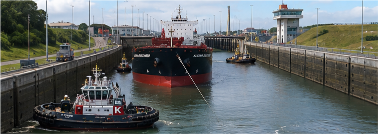
Figura 1 — Assistência durante passagem por eclusa.
Exemplo utilizado por Hensen para demonstrar que um rebocador destinado a determinado porto pode precisar ser capaz de acompanhar o navio também durante a passagem por locks e outros trechos restritos do acesso.
Fonte: Hensen, Tug Use in Port, 4ª ed., Chapter 1, Figure 1.1.
O crescimento das dimensões dos navios nem sempre é acompanhado pelo mesmo crescimento físico da infraestrutura portuária.
Essa diferença pode resultar em manobras cada vez mais complexas e produzir exigências adicionais sobre:
- potência;
- manobrabilidade;
- dimensões do rebocador;
- tempo de resposta.
🌐 Termos técnicos
- Conventional port — porto convencional;
- Harbour basin — bacia portuária;
- Dock — doca;
- River berth — berço situado em rio;
- Lock — eclusa;
- Bridge passage — passagem por ponte;
- Port approach — via de acesso ao porto.
⚠ Atenção PSCPP
O rebocador não deve ser selecionado considerando apenas o berço.
Ele pode precisar acompanhar e assistir o navio durante diferentes fases da aproximação ao porto.
4. Portos constituídos principalmente por terminais
Em alguns portos, os terminais possuem grande área disponível para manobra.
Quando existe espaço adequado, as manobras podem apresentar maior grau de padronização.
Hensen destaca que esse tipo de ambiente pode ser particularmente adequado ao método push-pull.
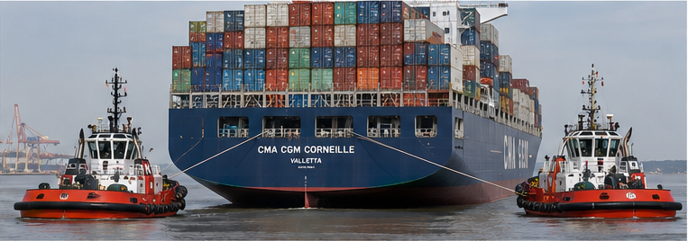
Figura 2 — Assistência junto a terminal de contêineres.
A figura mostra dois reverse tractor tugs assistindo um porta-contentores durante aproximação ao terminal utilizando o princípio push-pull.
Fonte: Hensen, Tug Use in Port, 4ª ed., Chapter 1, Figure 1.2.
Aplicação operacional
O método de assistência e o tipo de rebocador possuem forte relação entre si.
Um porto com grande espaço próximo aos terminais pode permitir configurações operacionais diferentes daquelas possíveis em um canal estreito, eclusa ou cais confinado.
5. Piers e Jetties
Hensen diferencia jetties em mar aberto e jetties em águas protegidas.
Uma diferença importante em relação a um cais convencional está na maneira pela qual o navio é amarrado.
Nas jetties, a amarração pode ocorrer utilizando:
- dolphins;
- finger piers;
- T-piers.
Essa geometria pode permitir que rebocadores trabalhem nos dois bordos do navio.
Em um cais convencional, a presença do próprio cais frequentemente restringe a atuação a um único bordo.
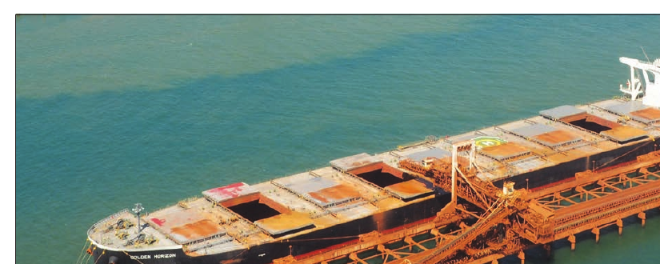
Figura 3 — Open Jetty em Port Hedland.
A configuração aberta da instalação evidencia a diferença geométrica entre uma jetty e um cais convencional.
Fonte: Hensen, Tug Use in Port, 4ª ed., Chapter 1, Figure 1.3.
🌐 Termos técnicos
- Pier — píer;
- Jetty — estrutura de atracação projetada para fora da margem;
- Open jetty — jetty localizada em área aberta/exposta;
- Dolphin — estrutura isolada utilizada para atracação ou amarração;
- Finger pier — píer estreito projetando-se da margem;
- T-pier — píer cuja extremidade forma configuração semelhante à letra T.
6. Instalações remotas e offshore
Instalações situadas offshore podem exigir que navios sejam posicionados e amarrados sob condições de:
- vento;
- ondas;
- swell;
- maior exposição ao mar.
Hensen relaciona esse ambiente a requisitos especiais para o rebocador, incluindo:
- boa estabilidade;
- defensas robustas;
- guinchos adequados;
- grande potência instalada.
Operações envolvendo:
- SPMs;
- F(P)SOs;
- FLNGs;
- LNG terminals;
- oil rigs;
podem impor requisitos adicionais de potência, manobrabilidade e equipamento de reboque.
Conceito fundamental
Quanto mais exposta for a instalação, maior pode ser a importância de:
estabilidade + potência + equipamento + comportamento em ondas.
7. Acessos portuários — Port Approaches
Os acessos ao porto sofrem influência direta do mar aberto.
Podem apresentar:
- grande ou pequena largura;
- bancos arenosos ou rochosos;
- entrada reta ou sinuosa;
- ondas e swell;
- águas profundas ou restritas.
Dependendo da situação local, o rebocador pode ser empregado no próprio port approach.
Nesse caso, deve possuir capacidade para trabalhar com segurança em condições mais abertas e expostas.
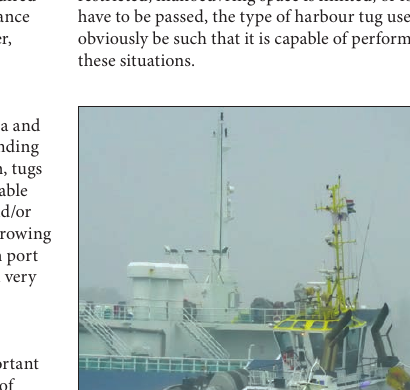
Figura 4 — Rebocador operando em condições de ondas.
A localização do porto pode exigir rebocadores capazes de continuar operando efetivamente sob waves e swell.
Fonte: Hensen, Tug Use in Port, 4ª ed., Chapter 1, Figure 1.4.
⚠ Atenção PSCPP
Um rebocador excelente dentro de uma bacia protegida não é automaticamente adequado para assistência em uma barra ou aproximação exposta ao mar.
8. Condições ambientais
As condições ambientais são consideradas por Hensen um dos principais fatores na definição dos requisitos dos rebocadores.
Entre elas estão:
- wind — vento;
- current — corrente;
- waves — ondas;
- swell — ondulação;
- ice — gelo;
- water depth — profundidade;
- variações de maré;
- restrições sazonais.
Em rios e estuários, as profundidades e correntes podem variar consideravelmente ao longo do percurso.
Consequentemente, as exigências impostas ao rebocador podem mudar entre a entrada do porto e o berço final.
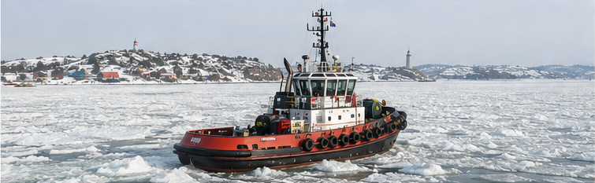
Figura 5 — Operação em condições de gelo.
Em regiões frias, o rebocador deve possuir características adequadas para continuar desempenhando suas funções em freezing conditions e gelo.
Fonte: Hensen, Tug Use in Port, 4ª ed., Chapter 1, Figure 1.5.
Profundidade limitada
Quando a profundidade disponível é reduzida, o próprio maximum draft of the tug passa a ser um requisito de seleção.
Um rebocador muito potente pode ser operacionalmente inadequado se não puder navegar com segurança na área onde sua força seria necessária.
🌐 Termos técnicos
- Environmental conditions — condições ambientais;
- Restricted water depth — profundidade limitada;
- Maximum draft — calado máximo;
- Freezing conditions — condições de congelamento;
- Strong current — corrente forte;
- Strong wind — vento forte.
9. Tipo de navio assistido
Outro fator fundamental é o tipo de navio que utilizará o porto.
Hensen cita, entre outros:
- LNG carriers;
- LPG carriers;
- FPSOs;
- FLNGs;
- bulk carriers;
- oil tankers;
- container ships;
- car carriers;
- ro-ro ships.
Diferentes tipos de navio produzem requisitos diferentes para o rebocador em relação a:
- engine power;
- towing equipment;
- fendering;
- manoeuvrability;
- superstructure.
Conceito fundamental
Quanto maior a variedade de tipos e dimensões dos navios atendidos por um porto, maior pode ser a variedade dos requisitos impostos à frota de rebocadores.
10. Serviços requeridos no porto e em suas proximidades
A assistência durante atracação e desatracação não constitui necessariamente a única função de um rebocador portuário.
Hensen cita outras atividades, como:
- reboque de equipamentos offshore;
- reboque de oil rigs;
- reboque de crane barges;
- reboque de inland barges;
- movimentação de floating cranes;
- assistência a push-tow barges;
- fire-fighting;
- pollution control.
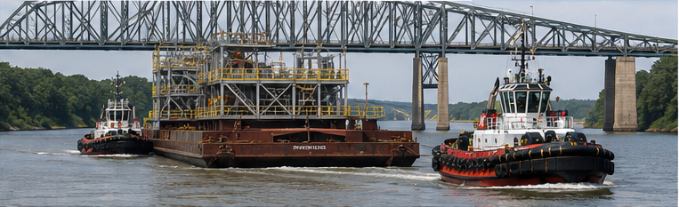
Figura 6 — Serviços além da assistência convencional ao navio.
Hensen utiliza o transporte de segmentos através de um rio e sob uma ponte como exemplo de tarefa adicional que pode ser exigida dos rebocadores.
Fonte: Hensen, Tug Use in Port, 4ª ed., Chapter 1, Figure 1.6.
⚠ Atenção PSCPP
Não confunda capacidade de produzir grande Bollard Pull com capacidade de executar qualquer serviço.
Cada tarefa pode exigir combinações específicas de:
potência + manobrabilidade + equipamento + dimensões + método de reboque.
11. Método de assistência como fator de projeto
O método de assistência utilizado em determinado porto depende, segundo Hensen, de fatores como:
- layout do porto, terminal, jetty ou instalação offshore;
- tipo de navio;
- condições ambientais;
- complexidade de rios, canais e acessos;
- existência de pontes;
- existência de eclusas;
- necessidade de escort;
- tradições locais.
Consequentemente, existe forte relação entre:
Relação fundamental
tipo de rebocador ↔ método de assistência.
O método cria requisitos para o rebocador, e as capacidades do rebocador condicionam os métodos que podem ser empregados.
Em determinados portos, os rebocadores também precisam:
- empurrar diretamente o costado;
- frear o navio;
- controlar sua velocidade;
- auxiliar na aproximação de pontes e eclusas;
- contribuir para manter velocidade e rumo após uma falha do navio.
⚠ Atenção PSCPP
O método de assistência não deve ser analisado separadamente do tipo de rebocador.
Esse relacionamento será desenvolvido em profundidade na Parte 3 — Assisting Methods.
12. Experiência disponível
Práticos e comandantes de rebocadores desenvolvem experiência com:
- os métodos de assistência utilizados localmente;
- os rebocadores existentes;
- suas capacidades;
- suas limitações;
- suas vantagens;
- suas deficiências;
- o desempenho das tripulações.
Essa experiência permite antecipar o comportamento do rebocador durante a operação.
A mudança para um sistema muito diferente pode exigir:
- tempo de adaptação;
- treinamento;
- instrução;
- planejamento da transição.
Aplicação operacional
Introduzir um rebocador tecnicamente mais moderno não elimina a necessidade de treinamento.
Uma mudança significativa na forma de operar também representa mudança na maneira como Prático e Tug Master coordenam suas ações.
13. Requisitos de segurança
Alguns rebocadores precisam operar em hazardous areas, por exemplo durante operações envolvendo LNG carriers ou LNG terminals.
Nessas situações, podem existir requisitos especiais de segurança.
Hensen destaca ainda que toda assistência com rebocadores envolve riscos para:
- o próprio rebocador;
- sua tripulação.
Esses riscos podem ser reduzidos por:
- bom treinamento;
- projeto adequado;
- equipamento apropriado;
- seleção correta do tipo de rebocador.
⚠ Atenção PSCPP
A segurança não é um elemento separado do projeto do rebocador.
O tipo de rebocador e sua configuração também influenciam o nível de segurança da assistência.
14. Síntese dos fatores de projeto
O Chapter 1 pode ser sintetizado pela seguinte cadeia lógica:
Seleção do rebocador
PORTO E ACESSOS + CONDIÇÕES AMBIENTAIS + NAVIOS ASSISTIDOS + SERVIÇOS + MÉTODO DE ASSISTÊNCIA + EXPERIÊNCIA + SEGURANÇA
↓
REQUISITOS OPERACIONAIS DO REBOCADOR
↓
TIPO, POTÊNCIA, DIMENSÕES, MANOBRABILIDADE E EQUIPAMENTOS
Não existe, portanto, um único rebocador ideal para todas as situações.
As características requeridas dependem da operação específica.
🌐 Vocabulário essencial da Parte 1
- Tug requirements — requisitos do rebocador;
- Tug capabilities — capacidades do rebocador;
- Tug limitations — limitações do rebocador;
- Port approaches — acessos portuários;
- Environmental conditions — condições ambientais;
- Assisting method — método de assistência;
- Towing equipment — equipamento de reboque;
- Fendering — sistema de defensas;
- Manoeuvrability — manobrabilidade;
- Reliability — confiabilidade.
15. Technical English — Tug Design Factors
Uma frase curta da própria publicação resume o raciocínio desta Parte 1:
📖 Original — Tug Use in Port
“No two ports are the same.”
🇧🇷 Tradução técnica
“Não existem dois portos iguais.”
No contexto do capítulo, essa frase significa muito mais do que diferenças geométricas.
Dois portos podem diferir em:
- acessos;
- profundidade;
- correntes;
- ondas;
- tipos de navios;
- métodos de assistência;
- necessidade de escort;
- práticas locais.
⚠ Atenção PSCPP — Inglês
Não confunda:
Requirements — aquilo que a operação exige.
Capabilities — aquilo que o rebocador consegue fazer.
Limitations — as restrições dentro das quais essa capacidade pode ser utilizada.
16. Pontos fundamentais para o PSCPP
- Não existe um tipo universalmente melhor de rebocador.
- A configuração do porto influencia os requisitos.
- O acesso ao porto pode ser tão importante quanto o berço.
- Portos convencionais podem exigir operação em rios, canais, pontes e eclusas.
- Terminais com espaço adequado podem favorecer métodos como o push-pull.
- Jetties podem permitir atuação em ambos os bordos.
- Instalações offshore podem exigir maior estabilidade, potência e equipamento específico.
- Vento, corrente, ondas, swell, gelo e profundidade influenciam a seleção do rebocador.
- O tipo de navio assistido modifica os requisitos de potência, equipamento, defensas e manobrabilidade.
- O serviço exigido também condiciona o projeto.
- Tipo de rebocador e método de assistência estão diretamente relacionados.
- Experiência local e treinamento são elementos importantes durante mudanças de sistema.
- Bollard Pull isoladamente não define a adequação de um rebocador.
⚠ Regra mental para prova
Ao analisar a escolha de um rebocador, pense:
ONDE ELE VAI OPERAR?
QUAL NAVIO ELE VAI ASSISTIR?
QUAL SERVIÇO DEVERÁ EXECUTAR?
EM QUAIS CONDIÇÕES?
QUAL MÉTODO SERÁ UTILIZADO?
PARTE 2 — TIPOS DE REBOCADORES PORTUÁRIOS
Types of Harbour Tug
Depois de compreender os fatores que condicionam a escolha de um rebocador, é necessário estudar como os diferentes tipos são configurados e de que maneira sua configuração influencia o desempenho durante a assistência.
Hensen ressalta que a nomenclatura dos rebocadores nem sempre é uniforme. Ao longo do tempo, diferentes tipos receberam nomes baseados no sistema de propulsão, fabricante, posição dos propulsores ou sistema de governo.
Para compreender seu comportamento operacional, a classificação mais útil considera principalmente:
- a localização do sistema de propulsão;
- a localização do ponto de reboque;
- a extremidade utilizada durante a assistência.
17. Classificação básica dos rebocadores
Hensen organiza inicialmente os basic tug types de acordo com a posição relativa entre propulsão e towing point.
A. Propulsão a ré e towing point próximo de meia-nau
Esse é o arranjo básico dos conventional tugs.
Nele, os hélices ou propulsores principais encontram-se na região de ré, enquanto o ponto de reboque fica mais à vante, normalmente próximo da região de meia-nau.
B. Propulsão a vante e towing point a ré
Essa configuração caracteriza os tractor tugs.
Os propulsores encontram-se a vante da região de meia-nau, enquanto o ponto principal de reboque encontra-se a ré.
A partir desses dois conceitos básicos, Hensen identifica:
- Conventional tugs;
- Tractor tugs with Voith propulsion;
- Tractor tugs with azimuth propellers;
- Reverse-tractor tugs;
- ASD — Azimuth Stern Drive tugs;
- Combi-tugs.
Conceito fundamental
O tipo de propulsor, isoladamente, não é suficiente para classificar corretamente um rebocador.
É necessário observar conjuntamente:
PROPULSÃO + TOWING POINT + EXTREMIDADE DE TRABALHO.
🌐 Termos técnicos
- Basic tug types — tipos básicos de rebocadores;
- Propulsion aft — propulsão localizada a ré;
- Propulsion forward — propulsão localizada a vante;
- Towing point — ponto pelo qual a carga do cabo é transmitida ao rebocador;
- Midships — região de meia-nau;
- Working end — extremidade utilizada operacionalmente junto ao navio assistido.
⚠ Atenção PSCPP
Azimuth propulsion não significa automaticamente ASD.
Propulsores azimutais podem equipar tractor tugs, reverse-tractor tugs, ASD tugs e outros projetos.
18. Requisitos gerais para um bom desempenho
Antes de tratar individualmente cada tipo, Hensen apresenta requisitos gerais associados ao bom desempenho e à segurança dos rebocadores.
Response time
O tempo de resposta entre uma ordem e sua efetiva execução deve ser reduzido.
Isso envolve não apenas o sistema de propulsão, mas também:
- manobrabilidade;
- capacidade de reposicionamento;
- controle de potência;
- operação do equipamento de reboque.
Effectiveness
A efetividade do rebocador está relacionada à sua capacidade de produzir a força necessária na direção necessária.
Não depende exclusivamente do Bollard Pull.
Required manoeuvring space
Em áreas restritas, é desejável que o rebocador necessite do menor espaço possível para executar suas manobras.
Visibility
Hensen dá importância especial à visibilidade a partir da estação de manobra.
O Tug Master deve possuir boa visualização de:
- extremidades do rebocador;
- towline;
- towing equipment;
- working deck;
- área de contato entre navio e rebocador;
- navio assistido;
- demais rebocadores;
- direção de operação.
Conceito fundamental
Um rebocador eficiente não precisa apenas gerar grande força.
Ele precisa conseguir posicionar e mudar rapidamente a direção dessa força, mantendo segurança e controle.
19. Rebocador convencional — Conventional Tug
Os conventional tugs ainda podem ser encontrados em várias partes do mundo, embora Hensen observe que novas unidades desse tipo são construídas em número decrescente.
Podem apresentar:
- um hélice — single screw;
- dois hélices — twin screw;
- hélices de passo fixo;
- hélices de passo controlável;
- hélices abertas;
- hélices em nozzle;
- diferentes sistemas de leme.
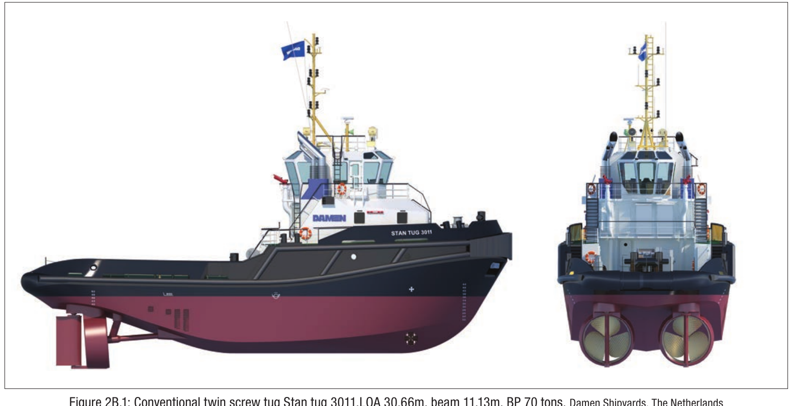
Figura 7 — Conventional twin screw tug.
A figura permite visualizar uma configuração convencional com dois eixos propulsores instalados a ré.
Fonte: Hensen, Tug Use in Port, 4ª ed., Chapter 2, Figure 2B.1.
Hensen cita como aplicações dos rebocadores convencionais:
- push-pull assistance;
- alongside towing;
- towing on a line.
O emprego em towing on a line é particularmente encontrado em alguns portos europeus.
Limitações características
A localização do towing point constitui elemento fundamental de seu comportamento.
Entre as limitações discutidas por Hensen estão:
- risco de girting quando rebocando pelo cabo;
- menor capacidade de empuxo a ré em muitas configurações convencionais;
- menor capacidade de produzir empuxo lateral quando comparado a rebocadores modernos de propulsão vetorial.
🌐 Termos técnicos
- Single-screw tug — rebocador de um hélice;
- Twin-screw tug — rebocador de dois hélices;
- Towing on a line — reboque/assistência com o rebocador afastado, transmitindo força por um cabo;
- Alongside towing — operação com o rebocador trabalhando junto ao costado;
- Girting / girding — situação perigosa de carregamento transversal do rebocador pelo cabo.
⚠ Atenção PSCPP
A vulnerabilidade ao girting está fortemente relacionada à posição do towing point e às forças transversais produzidas pelo cabo.
Esse fenômeno será estudado em profundidade na parte dedicada à segurança e interação.
20. Combi-Tug
O combi-tug é uma modificação de um conceito convencional, destinada a ampliar suas possibilidades operacionais.
Hensen descreve unidades equipadas com:
- propulsão principal convencional;
- um 360° steerable bow thruster;
- um ponto adicional de reboque localizado na extremidade de ré.
Dessa maneira, o mesmo rebocador pode operar:
- como rebocador convencional;
- ou de maneira semelhante a um tractor, quando utiliza o towing point mais a ré.
Conceito fundamental
O combi-tug busca combinar características de mais de uma configuração, sem deixar de possuir uma propulsão principal convencional.
⚠ Atenção PSCPP
Combi-tug ≠ ASD.
No ASD, a propulsão principal é composta por propulsores azimutais instalados a ré.
21. Tractor Tug com propulsão Voith-Schneider
Nos tractor tugs, o sistema de propulsão encontra-se sob a região de vante do casco, enquanto o towing point principal encontra-se a ré.
Quando equipado com propulsão cicloidal, o rebocador é normalmente denominado Voith-Schneider tug ou VS tug.
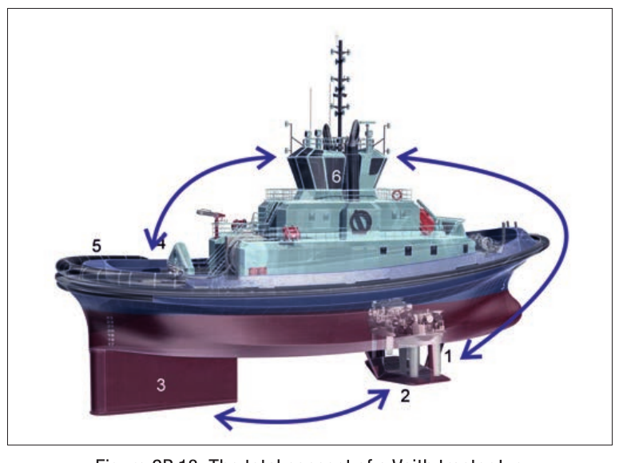
Figura 8 — Conceito geral de um Voith tractor tug.
Na representação de Hensen podem ser identificados:
- Voith-Schneider propellers;
- propeller guard plate;
- skeg;
- towing staple;
- towing point a ré;
- wheelhouse.
Fonte: Hensen, Tug Use in Port, 4ª ed., Chapter 2, Figure 2B.18.
Posição dos componentes
Segundo Hensen, as unidades propulsoras encontram-se aproximadamente entre 0,25 e 0,30 LWL a partir de vante, enquanto o towing point fica aproximadamente 0,10 a 0,20 LWL a partir de ré, podendo variar conforme o projeto e os requisitos operacionais.
O skeg é particularmente importante no tractor tug, pois contribui para a estabilidade direcional e desloca para ré o centro das forças hidrodinâmicas.
Isso possui importância especial durante towing on a line e operações como stern tug em velocidades maiores.
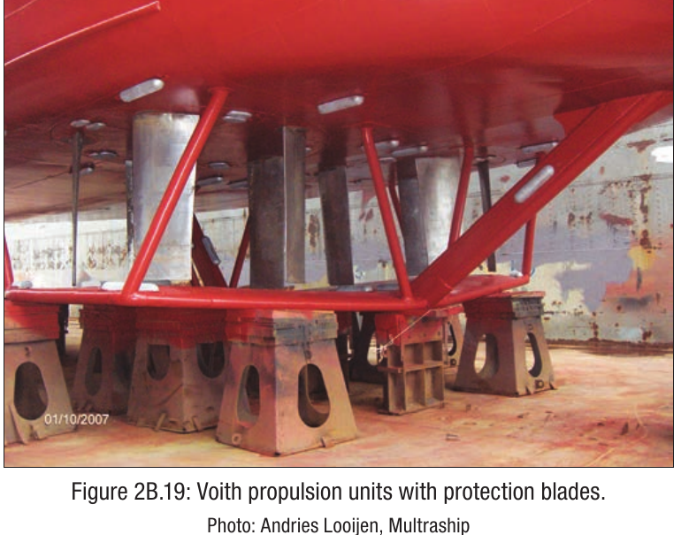
Figura 9 — Unidades de propulsão Voith-Schneider.
A fotografia permite observar as pás verticais características do sistema cicloidal.
Fonte: Hensen, Tug Use in Port, 4ª ed., Chapter 2, Figure 2B.19.
Princípio operacional
No sistema Voith-Schneider, as pás verticais movimentam-se em torno de um eixo vertical.
A alteração cíclica de seu ângulo permite controlar tanto:
- a direção do empuxo;
- a magnitude do empuxo.
Manobrabilidade
Hensen caracteriza os VS tractor tugs como highly manoeuvrable.
Entre suas características estão:
- capacidade de girar praticamente sobre o próprio ponto;
- elevado empuxo em diferentes direções;
- boa capacidade de navegar diretamente a ré;
- empuxo a ré próximo do empuxo avante.
Observe
Ao empurrar o navio, o Voith tractor normalmente utiliza a popa do próprio rebocador como extremidade de contato.
Por isso, Hensen destaca a presença de heavy-duty fendering na região de ré.
🌐 Termos técnicos
- Voith-Schneider Propeller — VSP — propulsor cicloidal de eixo vertical;
- Voith tractor tug — tractor tug equipado com VSP;
- Skeg — apêndice hidrodinâmico importante para estabilidade direcional;
- Towing staple — estrutura que estabelece/controla a passagem do cabo no ponto de reboque;
- Heavy-duty fendering — sistema de defensas reforçado.
22. Azimuth Tractor Tug
O azimuth tractor tug mantém a lógica estrutural do tractor:
- propulsão instalada a vante;
- towing point localizado a ré.
A diferença fundamental está no sistema propulsivo: em vez de VSPs, são utilizados azimuth thrusters.
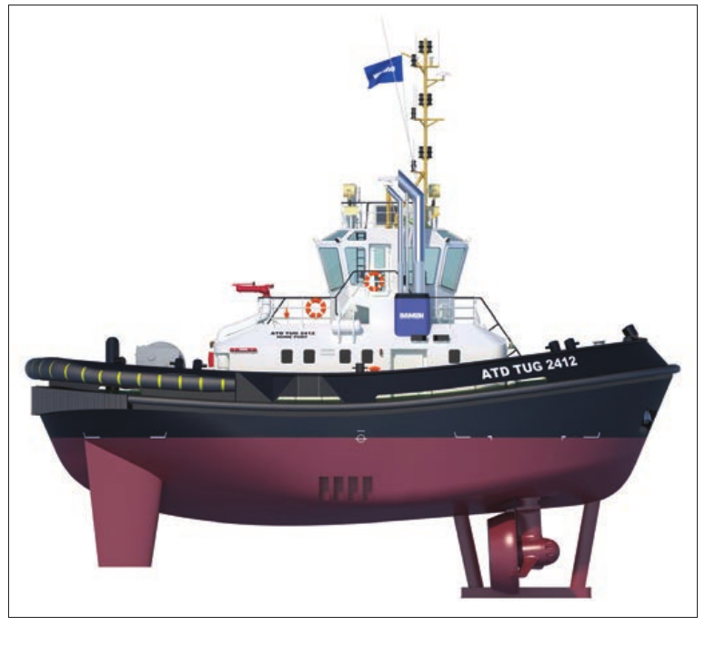
Figura 10 — Azimuth Tractor Tug.
A figura mostra o ATD 2412, com os propulsores azimutais instalados sob a região de vante.
Fonte: Hensen, Tug Use in Port, 4ª ed., Chapter 2, Figure 2B.27.
Os azimuth thrusters podem girar em torno de um eixo vertical, orientando diretamente o vetor de empuxo.
Isso permite elevada capacidade de manobra, incluindo:
- giro praticamente sobre o próprio ponto;
- movimento lateral;
- empuxo em praticamente qualquer direção;
- Bollard Pull avante e a ré de valores próximos.
Comparação com o Voith tractor
Voith tractor: propulsão a vante por VSP.
Azimuth tractor: propulsão a vante por azimuth thrusters.
Nos dois casos, o towing point principal fica a ré.
⚠ Atenção PSCPP
Tractor é a configuração geral do rebocador.
Voith-Schneider e azimuth descrevem sistemas propulsivos diferentes que podem ser empregados nessa configuração.
23. Reverse-Tractor Tug
O reverse-tractor tug, historicamente também chamado em alguns locais de pusher tug, possui:
- dois propulsores azimutais instalados a ré;
- towing point principal localizado a vante;
- operação normalmente realizada pela proa do rebocador.
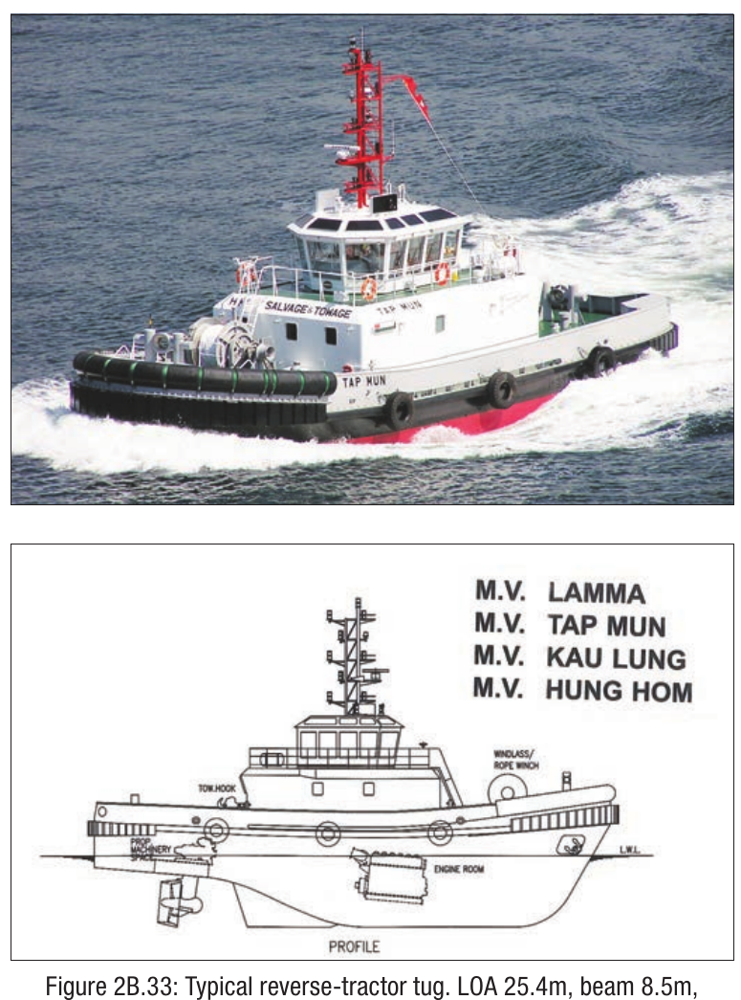
Figura 11 — Typical Reverse-Tractor Tug.
A figura evidencia a configuração característica: propulsores a ré e área principal de trabalho na região de vante.
Fonte: Hensen, Tug Use in Port, 4ª ed., Chapter 2, Figure 2B.33.
Hensen explica que a relação funcional com o navio é semelhante à do tractor:
o towing point fica voltado para o navio assistido e os propulsores permanecem na extremidade oposta.
Entretanto, o próprio casco encontra-se orientado de forma inversa em relação ao tractor clássico, daí a denominação reverse-tractor.
Conceito fundamental
Reverse-tractor não significa simplesmente “rebocador navegando de ré”.
É uma configuração própria:
AZIMUTH THRUSTERS A RÉ + TOWING POINT A VANTE + OPERAÇÃO PRINCIPAL PELA PROA.
⚠ Atenção PSCPP
Reverse-tractor e ASD podem parecer semelhantes porque ambos possuem propulsores azimutais a ré.
A diferença fica mais clara quando se analisa a versatilidade operacional e os pontos de reboque.
24. ASD — Azimuth Stern Drive Tug
O Azimuth Stern Drive — ASD também possui dois propulsores azimutais instalados na região de ré.
Entretanto, Hensen caracteriza o ASD como um multi-purpose tug.
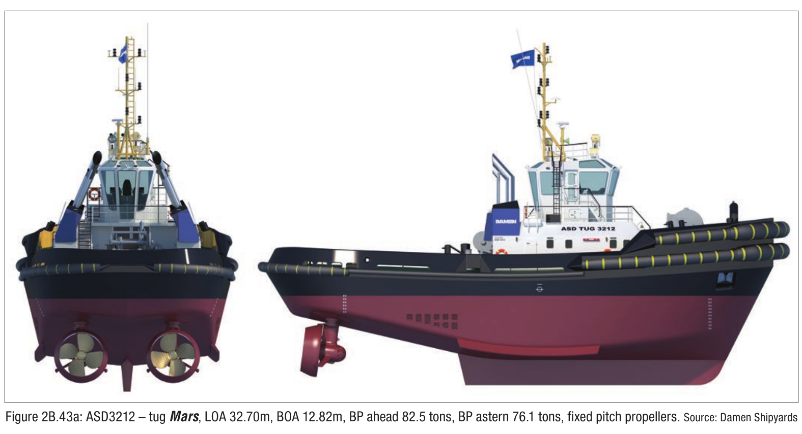
Figura 12 — ASD 3212.
A vista de popa mostra claramente os dois propulsores azimutais instalados sob a região de ré.
Fonte: Hensen, Tug Use in Port, 4ª ed., Chapter 2, Figure 2B.43a.
O ASD é projetado para poder operar:
- over the bow, como um reverse-tractor;
- over the stern, de maneira semelhante a um rebocador convencional.
Por isso, muitas unidades possuem:
- towing winch a vante;
- towing winch ou towing hook a ré;
- configuração que permite utilização das duas extremidades.
Manobrabilidade
Assim como os azimuth tractor tugs, os ASD possuem grande capacidade de vetoração do empuxo.
Hensen observa que o máximo empuxo a ré pode ser aproximadamente 5 a 10% inferior ao máximo avante, dependendo da unidade.
A diferença essencial
Reverse-tractor: projetado principalmente para operar pela proa.
ASD: projeto multipropósito capaz de trabalhar pela proa e também pela popa, quando adequadamente equipado.
🌐 Termos técnicos
- Azimuth Stern Drive — ASD — configuração com propulsores azimutais principais a ré;
- Multi-purpose tug — rebocador multipropósito;
- Operate over the bow — operar pela proa;
- Operate over the stern — operar pela popa;
- Forward towing winch — guincho de reboque a vante;
- Aft towing winch — guincho de reboque a ré.
⚠ Atenção PSCPP
A expressão Azimuth Stern Drive contém a própria pista:
STERN DRIVE → propulsores azimutais a ré.
Mas isso sozinho ainda não explica toda a configuração: o ASD também se caracteriza por sua versatilidade operacional.
25. Comparação dos principais tipos
Para identificar rapidamente os principais tipos de rebocadores, utilize a seguinte lógica:
CONVENTIONAL TUG
Propulsão a ré → towing point próximo de meia-nau.
TRACTOR TUG
Propulsão a vante → towing point a ré.
Pode utilizar: VSP ou azimuth thrusters.
REVERSE-TRACTOR
Propulsão azimutal a ré → towing point a vante → operação principal pela proa.
ASD
Propulsão azimutal a ré → configuração multipropósito → pode operar pela proa ou pela popa.
⚠ Regra mental para a prova
Ao encontrar uma descrição de rebocador, faça quatro perguntas:
1. Onde estão os propulsores?
2. Que tipo de propulsor está sendo utilizado?
3. Onde está o towing point?
4. Qual extremidade trabalha com o navio?
26. Tipos relacionados e desenvolvimentos modernos
Depois dos tipos básicos, Hensen apresenta diversos related tug types e desenvolvimentos modernos.
Entre eles estão:
- Rotortug;
- Z-Tech tug;
- RSD — Reversed Stern Drive tug;
- Carrousel tug;
- DOT tug;
- All-Rounder AR360T;
- FAST tug concepts.
Hensen utiliza esses projetos para demonstrar que a evolução dos rebocadores continua produzindo novas combinações de:
- posição de propulsores;
- posição dos towing points;
- skegs;
- formas de casco;
- sistemas de controle.
Importante para o estudo
Esses projetos especiais são mais fáceis de compreender depois que se dominam os quatro conceitos fundamentais:
CONVENTIONAL → TRACTOR → REVERSE-TRACTOR → ASD.
27. Technical English — Types of Harbour Tug
Um trecho particularmente importante do Chapter 2 resume o critério utilizado pelo autor:
📖 Original — Tug Use in Port
“it is better to classify tugs according to their location of propulsion and towing point.”
🇧🇷 Tradução técnica
“É melhor classificar os rebocadores de acordo com a localização da propulsão e do ponto de reboque.”
A passagem é importante porque evita uma armadilha terminológica frequente: classificar um rebocador apenas pelo fabricante ou pelo tipo de propulsor.
🌐 Vocabulário para prova
- Conventional tug — rebocador convencional;
- Tractor tug — rebocador tractor;
- Reverse-tractor tug — rebocador reverse-tractor;
- ASD tug — rebocador Azimuth Stern Drive;
- Cycloidal propulsion — propulsão cicloidal;
- Azimuth thruster — propulsor azimutal;
- Thruster location — posição do propulsor;
- Towing point location — posição do ponto de reboque;
- Highly manoeuvrable — altamente manobrável;
- Course stability — estabilidade direcional.
⚠ Atenção PSCPP — Inglês
Se a questão disser apenas que o rebocador possui azimuth propellers, a informação ainda é insuficiente para determinar se ele é:
- azimuth tractor;
- reverse-tractor;
- ASD;
- ou outro projeto relacionado.
Procure a posição dos propulsores e do towing point.
28. Síntese técnica — Parte 2
- A nomenclatura dos rebocadores não é totalmente uniforme.
- A posição da propulsão e do towing point constitui um critério particularmente útil de classificação.
- Conventional tugs possuem a propulsão a ré e o towing point mais à vante.
- Tractor tugs possuem propulsão a vante e towing point a ré.
- Tractor tugs podem utilizar VSP ou azimuth thrusters.
- Reverse-tractor tugs possuem propulsão azimutal a ré, towing point a vante e trabalham principalmente pela proa.
- ASD tugs possuem propulsão azimutal a ré e maior versatilidade para operar por ambas as extremidades.
- Combi-tugs combinam elementos de diferentes conceitos.
- Bollard Pull, isoladamente, não determina o comportamento de um rebocador.
- Skeg, casco, towing point, propulsão, fendering e equipamento de reboque devem ser analisados conjuntamente.
⚠ Preparação para a Parte 3
Agora já sabemos qual é a configuração do rebocador.
O próximo passo será compreender como essa configuração é efetivamente utilizada para aplicar força ao navio.
Esse será o assunto de:
PARTE 3 — MÉTODOS DE ASSISTÊNCIA
ASSISTING METHODS
PARTE 3 — MÉTODOS DE ASSISTÊNCIA
Assisting Methods
Hensen inicia o Chapter 3 distinguindo duas situações operacionais fundamentais:
- assistência por rebocadores durante o trânsito até ou a partir do berço, incluindo as operações de amarração e desamarração;
- assistência concentrada principalmente nas operações de amarração e desamarração.
A diferença entre essas duas situações é importante porque a velocidade do navio é um dos fatores que mais influenciam a escolha do tipo de rebocador e do método de assistência.
No trânsito, o navio pode manter velocidade da ordem de 3 a 6 nós, ou mesmo superior em determinadas situações.
Durante as fases finais de atracação, desatracação ou giro em uma bacia, a velocidade normalmente é muito baixa ou praticamente zero.
29. Assistência durante o trânsito e durante a atracação
Segundo Hensen, a necessidade de assistência por rebocadores depende de características pertencentes a três grupos principais:
1. O navio
- tipo;
- dimensões;
- calado;
- relação comprimento/boca;
- condição de carregamento;
- área vélica;
- manobrabilidade.
2. O berço e a área de manobra próxima
- tipo e dimensões do berço;
- alinhamento;
- espaço disponível para atracação;
- espaço de manobra;
- dimensões da bacia de evolução;
- profundidade;
- influência do vento e da corrente;
- disponibilidade de embarcações de amarração.
3. A rota de trânsito
- largura;
- comprimento;
- profundidade;
- curvas existentes;
- velocidade máxima permitida;
- tráfego esperado;
- navios atracados que deverão ser ultrapassados;
- vento;
- corrente;
- ondas;
- águas rasas;
- efeitos de banco.
Conceito fundamental
Para Hensen, a diferença essencial entre assistência durante transit e durante mooring/unmooring está principalmente na velocidade do navio.
Essa velocidade modifica significativamente o desempenho dos diferentes tipos de rebocador.
🌐 Termos técnicos
- Transit — trânsito ou deslocamento do navio pelo porto/acesso;
- Mooring — amarração;
- Unmooring — desamarração;
- Turning basin — bacia de evolução;
- Berthing space — espaço disponível para atracação;
- Transit route — rota de trânsito.
⚠ Atenção PSCPP
A mesma configuração de rebocador pode apresentar desempenho muito diferente com o navio parado ou com vários nós de velocidade através da água.
Por isso, no Chapter 3, Hensen trata a ship's speed como fator essencial na seleção do método de assistência.
30. O que se exige dos rebocadores durante o trânsito
Durante o trânsito, a assistência pode envolver:
- passagem por rio ou canal;
- entrada no porto;
- entrada em bacia de evolução;
- passagem por bacias portuárias estreitas;
- passagem por pontes estreitas;
- entrada ou passagem por eclusas.
Hensen destaca três capacidades importantes para os rebocadores empregados nessas situações.
Steering assistance
O rebocador pode ser necessário para auxiliar o controle do rumo durante:
- passagens estreitas;
- pontes;
- curvas fechadas ou estreitas;
- entrada em portos;
- entrada em bacias de evolução.
Speed control
O controle da velocidade pode ser necessário na aproximação de:
- portos;
- turning basins;
- locks.
Compensating for wind and current
Em um canal, rio ou bacia portuária, vento e corrente podem produzir drift.
A compensação somente pelo governo do navio pode exigir ângulo de deriva, aumento de velocidade ou maior largura de trajetória.
Quando essas soluções não são aceitáveis, pode ser necessária assistência por rebocadores.
O que Hensen ressalta
Em velocidades relativamente baixas, o efeito de vento, corrente e ondas torna-se proporcionalmente mais importante, enquanto a capacidade de governo do navio também pode diminuir.
Entretanto, velocidades próximas de 6 nós já podem ser elevadas para uma assistência eficiente de determinados rebocadores.
31. Os dois métodos fundamentais
Depois de analisar os métodos utilizados em diferentes partes do mundo, Hensen reduz as diversas práticas a dois métodos marcadamente diferentes:
1 — Tugs towing on a line
O rebocador trabalha afastado do navio e transmite sua força através da towline.
2 — Tugs operating at a ship's side
O rebocador trabalha diretamente junto ao costado, onde pode empurrar ou, quando conectado por cabo, puxar o navio.
Hensen ressalta que praticamente todos os tipos de rebocador podem empregar ambos os métodos, embora para alguns tipos towing on a line possa ser menos eficiente ou mais problemático.
📖 Original — Tug Use in Port
“Assessment of assisting methods ... shows only two markedly different methods.”
🇧🇷 Tradução técnica
“A avaliação dos métodos de assistência mostra apenas dois métodos marcadamente diferentes.”
🌐 Termos técnicos
- Towing on a line — assistência com o rebocador trabalhando por cabo;
- Operating at a ship's side — rebocador trabalhando junto ao costado;
- Towline — cabo de reboque;
- Push-pull — operação em que o rebocador pode empurrar ou puxar a partir do costado.
32. Rebocadores no costado — Push-Pull
Um dos métodos descritos por Hensen consiste em manter os rebocadores alongside durante a aproximação ao berço e utilizar pushing ou push-pull durante a atracação.
Segundo a publicação, esse método é normalmente utilizado em muitos portos dos:
- Estados Unidos;
- Canadá;
- Austrália;
- Malásia;
- África do Sul;
- e em grandes terminais de petróleo na Noruega.
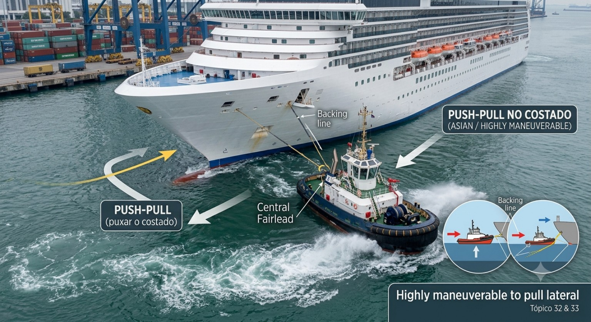
Figura 13 — Tugs alongside at approach and push-pull while mooring/unmooring.
O esquema mostra a mudança de função dos rebocadores: primeiro acompanhando o navio, depois aplicando força transversal durante a atracação, e finalmente durante a saída.
Fonte: Hensen, Tug Use in Port, 4ª ed., Chapter 3, Figure 3.3.
Forma de conexão
Com rebocadores de propulsão omnidirecional, Hensen descreve normalmente:
- ASD/reverse-tractor tugs conectados por uma linha proveniente da proa do rebocador;
- tractor tugs conectados por linha proveniente da popa do rebocador.
A conexão normalmente é feita na região do forward shoulder e do aft shoulder do navio assistido.
Aplicação operacional — conforme Hensen
A principal vantagem do push-pull é o curto tempo de resposta, particularmente importante nas operações de atracação.
⚠ Atenção PSCPP
O termo push-pull não significa simplesmente colocar um rebocador ao lado do navio.
A conexão permite ao rebocador empurrar e também puxar o navio a partir daquela posição.
33. Rebocadores convencionais trabalhando no costado
Nos Estados Unidos, Hensen descreve rebocadores convencionais presos ao navio por uma, duas ou três linhas, dependendo:
- do tipo de rebocador;
- da situação local;
- da assistência requerida.
Backing line
A linha de vante do rebocador funciona como backing line e é feita firme no navio.
Spring
O spring pode partir do guincho de vante e passar pelo bow chock ou fairlead.
Stern line
Uma terceira linha pode ser utilizada quando o rebocador precisa trabalhar aproximadamente a 90° com o navio.
Segundo Hensen, ela pode impedir que o rebocador caia para junto do costado quando o navio possui movimento avante ou a ré e também pode auxiliar na compensação de efeitos associados à propulsão.
Diferença para rebocadores mais manobráveis
Twin-screw tugs e rebocadores com steerable nozzles podem normalmente trabalhar com menor número de linhas, graças à maior manobrabilidade.
🌐 Termos técnicos
- Backing line — linha utilizada pelo rebocador ao dar força para ré;
- Spring — espringue;
- Stern line — cabo de popa do rebocador;
- Bow chock — buzina/guia de cabo na proa;
- Fairlead — guia para condução do cabo.
34. Alongside Towing — On the Hip / Hipped Up
Hensen descreve também o breasted or alongside towing, conhecido em alguns locais como:
- on the hip;
- hipped up.
Nesse método, o rebocador é firmemente amarrado ao costado do navio.
O sistema é utilizado, entre outras situações, no manuseio de barcaças e de dead ships.
Comportamento descrito por Hensen
Quando rebocador e navio estão rigidamente unidos, o conjunto pode comportar-se de maneira semelhante a um navio twin-screw com forças propulsivas independentes.
Com um rebocador preso a vante e orientado adequadamente, seu conjunto propulsão/governo pode atuar de maneira comparável a um steerable bow thruster.
🌐 Termos técnicos
- Alongside towing — reboque junto ao costado;
- Breasted — amarrado lateralmente;
- On the hip / hipped up — rebocador firmemente amarrado ao costado;
- Dead ship — navio sem utilização efetiva de sua própria propulsão para a manobra.
35. Rebocador de vante no costado e rebocador de ré no cabo
Outro método apresentado por Hensen utiliza:
- o rebocador de vante trabalhando alongside;
- o rebocador de ré trabalhando on a line.
Durante a aproximação, o rebocador de ré é utilizado para:
- controle direcional;
- controle de velocidade.
Durante a atracação, os rebocadores passam a trabalhar em push-pull.
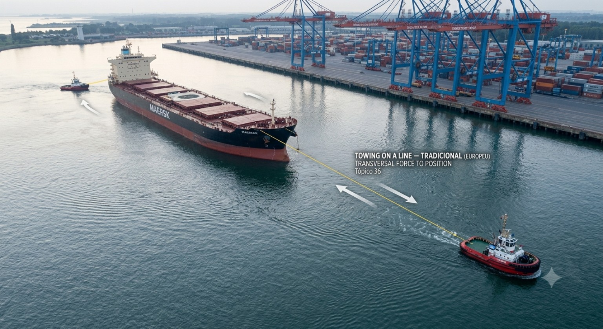
Figura 14 — Forward tug alongside and aft tug on a line.
Hensen associa esse arranjo principalmente a portos do Japão, Taiwan e Hong Kong.
Fonte: Hensen, Tug Use in Port, 4ª ed., Chapter 3, Figure 3.11.
Tipo de rebocador descrito
Nesses portos, Hensen destaca principalmente reverse-tractor tugs e, em alguns casos, ASD tugs.
36. Towing on a Line durante o trânsito e a atracação
Hensen identifica towing on a line como método tradicionalmente utilizado em muitos portos europeus, originalmente com rebocadores convencionais.
Nesse sistema, os rebocadores podem permanecer conectados durante grande parte do trânsito:
- rio;
- entrada do porto;
- bacias portuárias;
- aproximação ao berço.
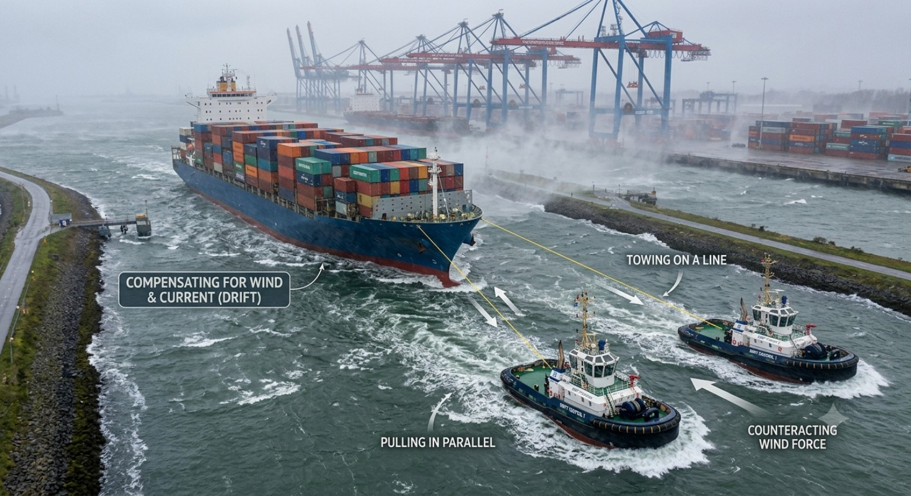
Figura 15 — Towing on a line at the approach and while mooring.
Os rebocadores permanecem afastados e utilizam as towlines para aplicar força e controlar o movimento do navio.
Fonte: Hensen, Tug Use in Port, 4ª ed., Chapter 3, Figure 3.12.
Uma vantagem destacada pela publicação é a possibilidade de utilização em águas estreitas.
Por isso, o método também pode ser empregado em:
- pontes estreitas;
- eclusas;
- docas secas.
Cross lines / Gate lines
Em determinadas passagens estreitas, o rebocador de vante pode utilizar duas towlines.
Hensen menciona cross lines ou gate lines, permitindo resposta rápida com pequeno espaço de manobra.
Aplicação operacional — conforme Hensen
Uma das principais vantagens do método é permitir assistência em locais onde a largura disponível não comporta facilmente navio e rebocadores trabalhando lado a lado.
37. Towing on a Line na aproximação e Push-Pull na atracação
Hensen descreve também um método que combina as vantagens dos dois sistemas.
Durante a aproximação, os rebocadores trabalham towing on a line.
Próximo ao berço, passam para push-pull.
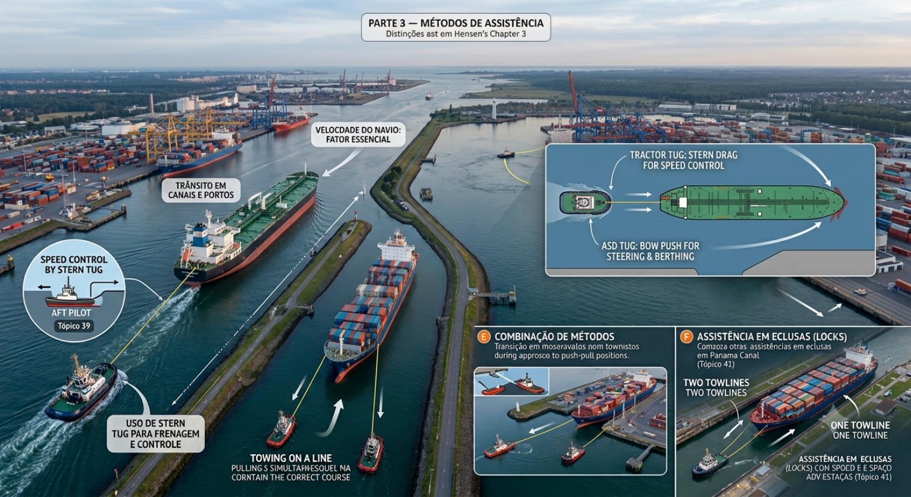
Figura 16 — Towing on a line at the approach and push-pull while mooring.
Hensen observa que esse método vem se tornando mais comum em portos que utilizam rebocadores de elevada manobrabilidade.
Fonte: Hensen, Tug Use in Port, 4ª ed., Chapter 3, Figure 3.14.
Os tipos citados pelo autor incluem:
- tractor tugs;
- reverse-tractor tugs;
- ASD tugs.
O que muda ao longo da manobra
O método de assistência não precisa permanecer o mesmo durante toda a operação.
A configuração pode ser modificada à medida que o navio passa do trânsito para a aproximação final e para a atracação.
38. Combinação de métodos
Em portos onde diferentes tipos de rebocador estão disponíveis, ou quando navios maiores necessitam de mais de dois rebocadores, Hensen mostra que podem ser utilizadas combinações de métodos.
A entrada no porto ou a própria atracação pode ser suficientemente complexa para que um único método não seja empregado durante toda a operação.
Princípio da publicação
A escolha do método é resultado da combinação entre:
- tipo de rebocador disponível;
- geometria do porto;
- necessidade de steering;
- necessidade de speed control;
- distância disponível para parada;
- fase da manobra.
39. Speed Control by Stern Tug
Hensen dedica atenção específica ao emprego de rebocadores omnidirecionais a ré para controle da velocidade do navio.
Esses rebocadores podem ser utilizados para:
- frear o navio;
- manter sua velocidade em nível reduzido.
A publicação apresenta como exemplo uma velocidade da ordem de:
3 a 4 nós,
inferior à velocidade de Dead Slow Ahead do navio, permitindo que a máquina permaneça funcionando e o navio mantenha capacidade de governo.
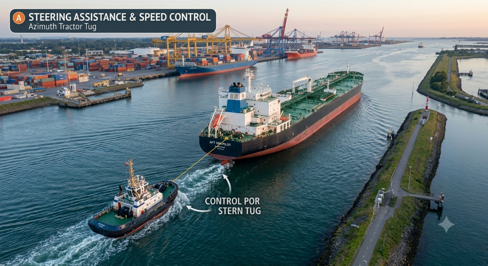
Figura 17 — Speed control by stern tug.
O azimuth tractor tug Arion puxa para trás o tanker Torm Loke, permitindo que o navio mantenha a máquina funcionando e permaneça governável.
Fonte: Hensen, Tug Use in Port, 4ª ed., Chapter 3, Figure 3.16.
Situações mencionadas por Hensen
- falha de máquina e necessidade de parar o navio;
- aproximação a uma bacia de evolução;
- aproximação de eclusa;
- passagem por ponte estreita em condição de vento;
- passagem próxima a navios atracados;
- quando a velocidade Dead Slow Ahead é excessivamente elevada.
Ponto importante da publicação
Hensen menciona situações em que Dead Slow Ahead pode superar 6–7 nós, valor elevado para que rebocadores de vante façam fast com segurança.
Nessas situações, um stern tug pode permitir velocidade menor sem que seja necessário parar repetidamente a máquina principal.
⚠ Atenção PSCPP
A publicação também alerta que o uso prolongado desse método pode produzir forte vibração a bordo do rebocador.
40. Push-Pull versus Towing on a Line
A Section 3.2.2 de Hensen compara diretamente os dois métodos.
Vantagem principal do Push-Pull
Rebocadores trabalhando junto ao costado podem reagir rapidamente, com short response times.
Isso é particularmente importante durante atracações.
Limitações do Push-Pull apresentadas por Hensen
- towlines normalmente curtas, o que pode ser problemático em ondas;
- perda de eficiência de tração quando o propeller wash do rebocador atinge o casco do navio;
- menor eficiência ao puxar no caso de rebocadores convencionais operando com máquinas a ré;
- a largura combinada navio + rebocador pode ser problemática em pontes e eclusas estreitas;
- depois de feitos fast no costado, há menor flexibilidade para mudar o bordo de atracação;
- o braço disponível para produzir giro é relativamente curto;
- rebocadores no bordo de sotavento podem ficar comprimidos entre o navio e o cais se o vento se tornar excessivo;
- o Tug Master possui menor visão da manobra global conduzida pelo Prático.
Aspectos do Towing on a Line
Hensen também registra algumas limitações:
- risco de interação, especialmente durante a passagem do cabo próximo à proa;
- tempo de resposta potencialmente maior;
- possível perda de eficiência quando o propeller wash atinge o casco, dependendo do comprimento e direção da towline.
Vantagens do Towing on a Line
- towlines mais longas, reduzindo efeitos de ondas e de ondas produzidas por navios que passam;
- possibilidade de reduzir a largura total da formação para aproximadamente a largura do próprio navio assistido;
- maior adequação a pontes e eclusas estreitas;
- possibilidade de atracar por bombordo ou boreste sem necessidade de reposicionar previamente os rebocadores para outro bordo;
- em vento ou corrente transversal, os rebocadores podem permanecer no lado considerado mais seguro;
- maior braço para produção de momento durante o giro;
- melhor visão do comportamento do navio para o Tug Master;
- melhor visualização das distâncias de vante e de ré durante a atracação.
Conclusão fiel à comparação de Hensen
Nenhum dos dois métodos é apresentado como universalmente superior.
Cada método possui vantagens e limitações próprias, e sua adequação depende:
do porto + navio + condições ambientais + tipo de rebocador + fase da operação.
41. Assistência em eclusas
Na Section 3.2.3, Hensen apresenta especificamente a assistência a grandes navios durante entrada em locks.
Na maioria dos casos, o rebocador utiliza uma towline.
Entretanto, em determinadas instalações podem ser utilizadas duas towlines provenientes de guinchos independentes.
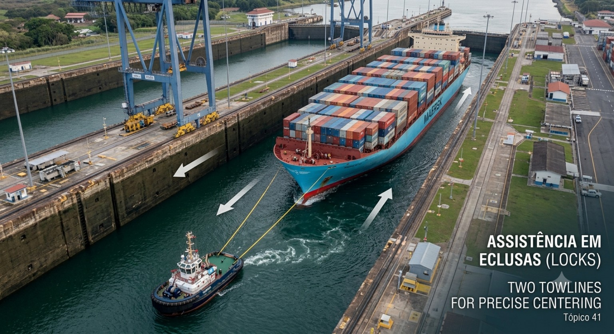
Figura 18 — Panama Canal Lock: forward tug with two towlines.
Hensen destaca que duas linhas permitem ao rebocador atuar efetivamente dentro da largura limitada da eclusa e reduzir o tempo de resposta.
Fonte: Hensen, Tug Use in Port, 4ª ed., Chapter 3, Figure 3.17.

Figura 19 — Lock assistance with one towline.
O Multratug 14, um Voith-Schneider tug, assiste o navio pela proa com uma única towline.
Fonte: Hensen, Tug Use in Port, 4ª ed., Chapter 3, Figure 3.18.
Vantagem das duas towlines
Segundo Hensen:
- o rebocador consegue responder rapidamente;
- necessita de pouco espaço lateral;
- a largura limitada da eclusa pode ser melhor aproveitada.
⚠ Limitação indicada pela publicação
Fazer fast duas towlines pode tornar-se problemático quando o navio possui tripulação reduzida no convés.
42. Relação entre tipo de rebocador e método de assistência
A Section 3.2.4 encerra a análise mostrando que existe relação direta entre:
TYPE OF TUG ↔ ASSISTING METHOD
Um fator fundamental é determinar se o rebocador deve ser capaz de:
- operar no costado;
- trabalhar towing on a line;
- ou executar ambos.
Europa
Hensen identifica towing on a line como prática geral, originalmente realizada principalmente por rebocadores convencionais.
A introdução de unidades com omnidirectional propulsion tem tornado os métodos mais flexíveis.
Estados Unidos
Os rebocadores operam principalmente junto ao costado.
A publicação registra uma evolução dos antigos rebocadores convencionais para tipos mais flexíveis, como tractor, reverse-tractor e ASD.
Japão, Taiwan e Hong Kong
Hensen relaciona o método:
stern tug on a line + forward tug alongside
principalmente ao reverse-tractor tug, embora ASD tugs também sejam utilizados.
Austrália, Nova Zelândia e África do Sul
Os rebocadores trabalham principalmente at a ship's side, com ampla presença de unidades de propulsão omnidirecional.
O que a publicação demonstra
O método empregado em determinado porto não é independente da frota disponível.
A evolução dos tipos de rebocador também pode provocar evolução dos próprios métodos de assistência.
43. Technical English — Assisting Methods
🌐 Vocabulário essencial do Chapter 3
- Tug assistance — assistência por rebocadores;
- Assisting method — método de assistência;
- Towing on a line — assistência por cabo com o rebocador afastado;
- Operating at a ship's side — operação junto ao costado;
- Push-pull — empurrar/puxar a partir do costado;
- Alongside towing — reboque lateral junto ao costado;
- On the hip / hipped up — rebocador rigidamente amarrado ao costado;
- Forward tug — rebocador de vante;
- Stern tug / aft tug — rebocador de ré;
- Steering assistance — assistência ao governo;
- Speed control — controle da velocidade;
- Braking — frenagem;
- Drift — deriva;
- Backing line — linha utilizada para permitir ao rebocador aplicar força para ré;
- Cross lines — cabos cruzados;
- Gate lines — arranjo de duas linhas utilizado em determinadas passagens restritas;
- Dead ship — navio sem emprego efetivo de sua própria propulsão na manobra.
⚠ Atenção PSCPP — interpretação
Alongside, at the ship's side e on the hip não devem ser tratados automaticamente como sinônimos perfeitos.
No Chapter 3, operating at the ship's side é a categoria ampla.
Alongside towing / on the hip descreve uma configuração específica em que o rebocador fica fortemente amarrado ao costado.
44. Síntese técnica — Parte 3
- Hensen identifica dois métodos fundamentais: towing on a line e operation at ship's side.
- A velocidade do navio é fator essencial na escolha do método.
- Durante o trânsito, os rebocadores podem prestar steering assistance, speed control e compensar vento e corrente.
- Durante atracação, as forças requeridas são predominantemente transversais.
- O push-pull apresenta resposta rápida, mas possui limitações relacionadas a cabo curto, largura total, braço de giro e exposição no bordo de sotavento.
- O towing on a line permite maior braço de atuação e menor largura total da formação, mas pode apresentar resposta mais lenta e riscos de interação durante a passagem da towline.
- Os dois métodos podem ser combinados na mesma manobra.
- Rebocadores modernos omnidirecionais aumentaram a flexibilidade dos métodos.
- Um stern tug pode ser utilizado para braking e speed control.
- Em eclusas, uma ou duas towlines podem ser empregadas, dependendo do arranjo e das condições locais.
- Existe forte relação entre o tipo de rebocador disponível e o método tradicionalmente utilizado em cada porto.
Estrutura mental da Parte 3
TOWING ON A LINE
ou
AT THE SHIP'S SIDE
ou
COMBINAÇÃO DOS DOIS
sempre analisados em função de:
VELOCIDADE DO NAVIO + ESPAÇO DISPONÍVEL + CONDIÇÕES AMBIENTAIS + TIPO DE REBOCADOR + FASE DA MANOBRA.
⚠ Preparação para a Parte 4
O Chapter 3 mostra como os rebocadores são empregados.
A próxima etapa será compreender quanto dessa assistência cada tipo consegue efetivamente produzir e quais são suas restrições:
PARTE 4 — CAPACIDADES E LIMITAÇÕES
TUG CAPABILITIES AND LIMITATIONS
PARTE 4 — CAPACIDADES E LIMITAÇÕES DOS REBOCADORES
Tug Capabilities and Limitations
Nesta parte, o desempenho dos diferentes tipos de rebocadores será analisado principalmente durante a assistência a um navio que possui velocidade através da água.
Hensen ressalta que, quando o navio está parado na água, um rebocador de determinado Bollard Pull — BP, operando da maneira mais efetiva, produz essencialmente o mesmo esforço independentemente do tipo.
As diferenças importantes entre os tipos de rebocadores tornam-se evidentes principalmente quando o navio assistido possui seguimento.
Conceito central do Chapter 4
Além do Bollard Pull, dois fatores são fundamentais para uma assistência eficaz:
- Correct tug positioning — posicionamento correto do rebocador;
- The right type of tug — utilização do tipo adequado de rebocador.
17. Capacidade do rebocador não é apenas Bollard Pull
O Bollard Pull é uma característica essencial do rebocador, mas não representa sozinho sua capacidade de assistência em todas as condições operacionais.
Segundo Hensen, as diferenças de desempenho entre os tipos de rebocadores aparecem principalmente quando o navio assistido possui speed through the water.
Isso ocorre porque o rebocador passa a ser submetido ao escoamento produzido pelo seu movimento relativo através da água.
Consequentemente, entram em jogo:
- forças hidrodinâmicas sobre o casco do rebocador;
- posição do ponto de reboque;
- posição do sistema propulsivo;
- centro lateral de pressão;
- ângulo do rebocador em relação ao escoamento;
- posição do rebocador em relação ao navio assistido.
Relação fundamental
Bollard Pull disponível ≠ força efetivamente aplicada ao navio em qualquer condição.
A capacidade efetiva depende também da velocidade, posição, configuração do rebocador e maneira pela qual ele está sendo utilizado.
🌐 Termos técnicos
- Bollard Pull — BP — tração estática;
- Speed through the water — velocidade através da água;
- Tug performance — desempenho do rebocador;
- Effective towline pull — tração efetiva no cabo de reboque;
- Incoming water flow — escoamento de água incidente sobre o rebocador.
⚠ Atenção PSCPP
Uma comparação entre dois rebocadores baseada exclusivamente no valor nominal de BP pode ser inadequada quando o navio possui seguimento.
O Chapter 4 passa justamente a analisar quanto da capacidade do rebocador pode ser utilizado efetivamente nas diferentes posições e métodos de assistência.
18. Três pontos fundamentais para o desempenho
Antes de comparar os tipos de rebocadores, Hensen estabelece que a relação entre três pontos é particularmente importante:
- centre of thrust — centro de empuxo;
- towing point / pushing point — ponto de reboque ou ponto de empurrar;
- lateral centre of pressure — centro lateral de pressão.
A posição relativa desses pontos influencia:
- efetividade;
- capacidade de manobra;
- forças disponíveis;
- estabilidade;
- segurança do rebocador.
Ponto de reboque — Towing Point
O towing point não é necessariamente a posição física do gancho ou do guincho.
Hensen define operacionalmente o ponto de reboque como o ponto a partir do qual o cabo segue em linha reta do rebocador em direção ao navio.
Na prática, ele frequentemente corresponde ao staple ou ao fairlead.
A posição desse ponto possui grande importância para:
- estabilidade;
- segurança;
- desempenho.
🌐 Termos técnicos
- Centre of thrust — centro de aplicação do empuxo;
- Towing point — ponto efetivo de reboque;
- Pushing point — ponto de contato através do qual o rebocador empurra;
- Lateral centre of pressure — centro lateral de pressão;
- Staple — estrutura/guia de reboque que condiciona a saída do cabo;
- Fairlead — guia de passagem do cabo.
19. Centro lateral de pressão
O lateral centre of pressure não ocupa uma posição fixa.
Sua localização depende, entre outros fatores, de:
- forma da carena;
- apêndices;
- leme;
- hélices;
- skeg;
- trim;
- ângulo de incidência do escoamento.
O escoamento incidente produz uma força hidrodinâmica sobre o rebocador.
A intensidade e direção dessa força dependem da geometria submersa e do ângulo de ataque.
Hensen destaca ainda que sua magnitude é fortemente dependente da velocidade, aproximadamente segundo o efeito associado ao quadrado da velocidade.
Consequência
Speed is a dominant factor.
À medida que a velocidade aumenta, as forças hidrodinâmicas atuantes sobre o casco do rebocador tornam-se progressivamente mais importantes.
Quando o fluxo incide aproximadamente pelo través, Hensen indica que o centro lateral de pressão normalmente fica a ré de meia-nau.
Sua posição, entretanto, varia com o tipo de rebocador e com seu projeto.
⚠ Atenção PSCPP
O comportamento de um rebocador com o navio parado não deve ser simplesmente extrapolado para a mesma operação com o navio desenvolvendo velocidade.
O aumento da velocidade modifica significativamente as forças hidrodinâmicas sobre o rebocador.
20. Diferença fundamental — Tractor × Conventional
Para compreender as capacidades e limitações durante towing on a line, Hensen destaca uma diferença geométrica fundamental.
Conventional type
Towing point localizado à vante da propulsão.
Tractor type
Towing point localizado a ré da propulsão.
Essa diferença aparentemente simples modifica a maneira pela qual:
- o rebocador se orienta em relação ao cabo;
- as forças hidrodinâmicas atuam sobre seu casco;
- a potência é utilizada para controlar sua posição;
- a força efetiva chega ao cabo.
🌐 Termos técnicos
- Conventional tug — rebocador convencional;
- Tractor tug — rebocador trator;
- Propulsion position — posição do sistema propulsivo;
- Towing angle — ângulo de reboque;
- Sideways resistance — resistência transversal.
⚠ Atenção PSCPP
A localização relativa entre propulsão e towing point é uma das chaves para entender por que diferentes tipos de rebocadores apresentam desempenhos distintos quando o navio possui seguimento.
21. Rebocador de vante trabalhando no cabo
Um forward tug towing on a line pode fornecer assistência de governo e produzir forças transversais para qualquer bordo.
Entretanto, Hensen identifica diferenças importantes entre rebocadores tractor e conventional.
Tractor tug
O rebocador trator pode deslocar-se rapidamente de um bordo para o outro devido à capacidade de produzir empuxo lateral por seus propulsores localizados à vante.
Isso proporciona boa rapidez de resposta para alterar a direção da assistência.
Por outro lado, quando trabalha a vante de um navio com seguimento, o tractor tende a ficar mais alinhado com o cabo e precisa vencer maior resistência transversal.
Parte da capacidade propulsiva é então utilizada para controlar o próprio rebocador, reduzindo a effective towline pull.
Conventional tug
O rebocador convencional, ou um ASD tug operating over the stern, pode girar em torno de seu ponto de reboque.
Segundo Hensen, isso permite trabalhar com menor resistência hidrodinâmica devido ao menor ângulo de ataque do escoamento e aproveitar melhor as forças hidrodinâmicas.
Efeito da velocidade
De maneira geral, Hensen indica que, com o aumento da velocidade do navio:
- a efetividade do conventional tug nessa configuração tende a aumentar, dependendo do ângulo de operação;
- a efetividade do tractor tug a vante tende a diminuir.
Quanto maior a velocidade do navio, maior pode tornar-se a diferença entre os dois.
22. Limitação do Tractor Tug a vante
Hensen chama atenção para uma limitação importante do tractor tug quando trabalha a vante no cabo.
Com o aumento da velocidade, o ângulo entre o rebocador e o escoamento não pode crescer indefinidamente.
Se esse ângulo se tornar excessivo, o rebocador poderá deixar de conseguir vencer sua resistência transversal.
Nessa condição, caso o cabo não seja rapidamente aliviado, o rebocador pode girar em torno do cabo preso ao ponto de reboque de ré e aproximar-se do costado do navio assistido.
Conclusão apresentada por Hensen
A tractor tug operating forward is limited by the ship's speed.
Esse é um exemplo direto de por que capability e limitation precisam ser analisadas juntamente com a velocidade do navio.
⚠ Atenção PSCPP
A elevada manobrabilidade de um tractor tug não elimina suas limitações hidrodinâmicas.
A velocidade do navio assistido é uma variável fundamental para determinar se determinada posição de trabalho permanece segura e efetiva.
23. Girting — limite crítico de segurança
Hensen relaciona outra condição perigosa à operação de rebocadores trabalhando no cabo.
Quando o ângulo entre o rebocador e o escoamento incidente torna-se excessivo, podem surgir grandes forças transversais no cabo.
Essa situação também pode ocorrer quando a velocidade do navio é excessiva em relação à velocidade ou à posição do rebocador.
Girting
O termo girting é utilizado para a condição perigosa na qual a força transversal exercida através do cabo pode produzir momento de adernamento suficientemente elevado para ameaçar a estabilidade do rebocador.
Hensen ressalta que, em emergência, um quick release hook nem sempre consegue ser liberado, especialmente sob forças muito elevadas.
Guinchos com sistemas de liberação rápida podem oferecer maior segurança, embora esses sistemas também possam apresentar problemas.
⚠ Atenção PSCPP
Quando rebocadores trabalham no cabo a vante, Hensen recomenda especial atenção ao controle da velocidade do navio.
Sempre que possível, o comportamento dos rebocadores deve ser cuidadosamente observado durante a assistência.
🌐 Termos técnicos
- Girting — condição perigosa associada a elevada força transversal no cabo e momento de adernamento do rebocador;
- Quick release hook — gancho de reboque de liberação rápida;
- Quick release system — sistema de liberação rápida;
- Athwartships towline force — força transversal exercida pelo cabo.
24. Cabo tensionado e aumento indesejado da velocidade
Existe ainda um efeito operacional destacado explicitamente por Hensen.
Quando um rebocador de vante fornece assistência de governo trabalhando no cabo, a força resultante frequentemente possui uma componente longitudinal no sentido do movimento do navio.
Essa componente tende a aumentar a velocidade do navio.
Além disso, rebocadores trabalhando no cabo podem ter tendência a manter o cabo tensionado mesmo quando nenhuma assistência está sendo solicitada.
Isso também pode produzir um aumento indesejado da velocidade do navio assistido.
Orientação operacional apresentada na publicação
Quando a assistência não é necessária, os Práticos frequentemente determinam que o rebocador mantenha o towline slack.
🌐 Termos técnicos
- Tight towline — cabo tensionado;
- Slack towline — cabo brando/aliviado;
- Speed-increasing force — força com componente que aumenta a velocidade do navio.
25. Rebocadores empurrando um navio com seguimento
O desempenho de um rebocador pushing at a ship underway também muda significativamente com a velocidade.
Hensen apresenta resultados de estudos de simulação para comparar um conventional tug e um ASD tug empurrando um navio em movimento.
Conventional tug
No exemplo apresentado, à medida que o navio aumenta a velocidade, o ângulo no qual o rebocador consegue empurrar diminui.
Acima de determinada velocidade, a força transversal começa a diminuir, enquanto a componente longitudinal aumenta rapidamente.
Essa componente longitudinal é indesejável quando a intenção é produzir principalmente força transversal, pois tende a aumentar a velocidade do navio.
Conclusão prática do estudo citado por Hensen
Para rebocadores convencionais, velocidades de aproximadamente 4 a 5 knots já representam valores elevados para produzir forças transversais efetivas.
Hensen observa que, em termos gerais, o limite superior para aplicação efetiva de força transversal situa-se em torno de 3 knots, dependendo do rebocador.
O autor conclui que, acima de aproximadamente 4 knots — ou cerca de 3 knots para rebocadores menos manobráveis — o desempenho de rebocadores convencionais nessa função torna-se muito pobre.
⚠ Atenção PSCPP
Os valores apresentados por Hensen nesse trecho decorrem dos estudos e ensaios específicos discutidos no Chapter 4.
Eles não devem ser transformados em um limite universal para qualquer rebocador.
Projeto, sistema de governo, casco, condições ambientais e método de trabalho modificam o desempenho real.
26. ASD Tug empurrando com o navio em movimento
O comportamento do ASD tug analisado por Hensen é significativamente diferente do rebocador convencional do exemplo anterior.
O ASD consegue continuar produzindo elevada força transversal em velocidades maiores.
Além disso, no exemplo apresentado, não produz a mesma componente longitudinal de aumento da velocidade observada no rebocador convencional.
Com o aumento da velocidade, as forças hidrodinâmicas sobre o casco do ASD passam a contribuir cada vez mais para a força transversal.
Hydrodynamic lift
No estudo apresentado, a aproximadamente 8.5 knots, cerca de 80% da força transversal de empurrar era produzida pela lift force gerada hidrodinamicamente pelo casco.
Isso demonstra uma ideia central do Chapter 4:
em determinadas configurações, a capacidade de assistência não resulta apenas do empuxo dos propulsores.
As forças hidrodinâmicas desenvolvidas sobre o próprio rebocador podem ser utilizadas para aumentar a força aplicada ao navio.
🌐 Termos técnicos
- Hydrodynamic lift — sustentação/força hidrodinâmica transversal;
- Transverse pushing force — força transversal de empurrar;
- Longitudinal force — força longitudinal;
- Direct mode — modo direto de assistência;
- Indirect mode — modo indireto, utilizando de forma importante as forças hidrodinâmicas sobre o rebocador.
27. A estabilidade também limita a capacidade
A força teoricamente possível não é necessariamente a força que pode ser aplicada com segurança.
Nos estudos apresentados por Hensen, a capacidade máxima também é condicionada por:
- estabilidade do rebocador;
- freeboard;
- altura do ponto de empurrar;
- rotação máxima do motor;
- torque do motor;
- adernamento excessivo.
Conceito fundamental
A estabilidade faz parte da capacidade operacional do rebocador.
Não basta conseguir gerar determinada força. O rebocador precisa ser capaz de aplicá-la dentro de condições aceitáveis de estabilidade e segurança.
⚠ Atenção PSCPP
Esse ponto será aprofundado na Parte 12 — Princípios básicos de estabilidade, utilizando também Estabilidade dos Rebocadores — Um Guia Prático para Operações Seguras .
28. Steering Force e Braking Force
Ao analisar rebocadores trabalhando no cabo, Hensen diferencia duas capacidades especialmente importantes:
Steering Force
Força utilizada para produzir ou auxiliar o controle direcional do navio.
Braking Force
Força utilizada para reduzir ou controlar o movimento longitudinal do navio.
Os diagramas de desempenho apresentados no Chapter 4 mostram que essas capacidades não permanecem constantes quando a velocidade aumenta.
No caso dos ASD e ATD analisados, a capacidade de fornecer steering force a vante diminui rapidamente com o aumento da velocidade.
Por outro lado, o desempenho de frenagem de um ASD trabalhando a ré apresenta comportamento diferente e não sofre a mesma redução.
Em velocidades mais elevadas, as diferenças entre configurações tornam-se ainda mais relevantes.
⚠ Atenção PSCPP
Perguntar apenas “quantas toneladas de BP tem o rebocador?” não responde:
- quanto steering force estará disponível;
- quanto braking force estará disponível;
- em qual direção essa força poderá ser aplicada;
- qual será o efeito da velocidade sobre essa capacidade.
29. Technical English — Capabilities and Limitations
O início do Chapter 4 contém uma afirmação especialmente importante para compreender todo o assunto:
📖 Original — Tug Use in Port
“Differences in tug performance mainly become apparent when a ship has speed through the water.”
🇧🇷 Tradução técnica
“As diferenças no desempenho dos rebocadores tornam-se evidentes principalmente quando o navio possui velocidade através da água.”
Essa frase explica por que o capítulo dedica tanta atenção à posição do rebocador, às forças hidrodinâmicas e à velocidade do navio assistido.
🌐 Vocabulário essencial
- Capabilities — capacidades;
- Limitations — limitações;
- Steering assistance — assistência de governo;
- Steering force — força de governo;
- Braking force — força de frenagem;
- Sideways force — força transversal;
- Towline force — força no cabo de reboque;
- Ship's speed — velocidade do navio;
- Effective tug position — posição efetiva do rebocador;
- Heeling angle — ângulo de adernamento.
30. Síntese — Capacidades e limitações
A lógica apresentada por Hensen pode ser sintetizada da seguinte maneira:
Capacidade efetiva de assistência
TIPO DE REBOCADOR + POSIÇÃO DO TOWING/PUSHING POINT + POSIÇÃO DA PROPULSÃO + CENTRO LATERAL DE PRESSÃO + VELOCIDADE DO NAVIO + POSIÇÃO DO REBOCADOR + MÉTODO DE ASSISTÊNCIA + ESTABILIDADE
↓
FORÇA EFETIVAMENTE APLICÁVEL AO NAVIO
- Com o navio parado, as diferenças entre tipos são menos pronunciadas quando rebocadores de mesmo BP operam da maneira mais efetiva.
- Com seguimento, as forças hidrodinâmicas tornam-se fundamentais.
- A posição relativa entre towing point e propulsão diferencia o comportamento dos tipos básicos de rebocadores.
- O tractor tug a vante possui grande rapidez de resposta, mas sua efetividade nessa posição pode diminuir com a velocidade.
- O conventional tug pode aproveitar de maneira diferente as forças hidrodinâmicas quando trabalha a vante no cabo.
- Velocidade excessiva pode produzir situações perigosas, incluindo girting.
- Rebocadores convencionais empurrando tornam-se pouco efetivos transversalmente à medida que a velocidade cresce.
- ASD tugs podem utilizar forças hidrodinâmicas para produzir grandes forças transversais em velocidades maiores.
- Steering force e braking force não são constantes com a velocidade.
- Estabilidade e adernamento limitam a força que pode ser aplicada com segurança.
⚠ Regra mental para o PSCPP
BP informa a força estática disponível.
A operação determina quanto dessa capacidade poderá ser transformada em assistência efetiva.
PARTE 5 — LIMITES AMBIENTAIS PARA OPERAÇÕES COM REBOCADORES
Environmental Limits for Tug Operations
As condições ambientais influenciam diretamente a segurança e a efetividade da assistência prestada pelos rebocadores.
Na Section 4.5 de Tug Use in Port, Hensen trata particularmente de:
- visibilidade;
- ondas;
- swell;
- direção e período das ondas;
- movimentos relativos entre rebocador e navio;
- comportamento das towlines;
- projeto dos rebocadores destinados a operar em condições de mar mais severas;
- limitações humanas do Tug Master quando submetido aos movimentos do rebocador.
Conceito fundamental
Não existe um único valor de wave height que possa ser utilizado isoladamente como limite de todos os rebocadores.
A capacidade depende também de:
TIPO DE REBOCADOR + PROJETO + MÉTODO DE ASSISTÊNCIA + VELOCIDADE + DIREÇÃO DAS ONDAS + PERÍODO DAS ONDAS + EXPERIÊNCIA DO TUG MASTER.
59. Condições ambientais e operação dos Harbour Tugs
Hensen inicia a Section 4.5.1 observando que os rebocadores portuários podem trabalhar sob ampla variedade de condições de wind e current.
Entretanto, a publicação não estabelece um único limite geral de vento ou corrente aplicável a todos os rebocadores.
As restrições discutidas mais diretamente na seção estão relacionadas a:
- visibilidade;
- ondas;
- swell;
- capacidade de fazer fast;
- controle do rebocador;
- cargas dinâmicas nas towlines.
Ponto importante da publicação
As limitações ambientais não dependem apenas da capacidade de propulsão.
Também dependem da possibilidade de:
- aproximar-se do navio;
- passar a towline;
- manter posição;
- controlar o rebocador;
- manter a segurança da tripulação.
🌐 Termos técnicos
- Environmental limits — limites ambientais;
- Operating limits — limites operacionais;
- Wind — vento;
- Current — corrente;
- Wave conditions — condições de ondas;
- Swell — ondulação de período relativamente longo.
60. Visibilidade e nevoeiro
Hensen considera o fog uma condição particularmente problemática para assistência com rebocadores em áreas portuárias confinadas.
Em boa visibilidade, o Tug Master avalia continuamente a posição e a velocidade do rebocador em relação:
- ao rumo do navio assistido;
- à velocidade do navio assistido;
- a boias;
- a balizas;
- às margens;
- aos cais;
- a outros obstáculos próximos.
Comparados aos movimentos de um navio, os movimentos do rebocador são muito mais rápidos.
Por essa razão, Hensen considera difícil conduzir a manobra utilizando apenas o radar do rebocador.
Além disso, quando o rebocador opera próximo ao costado, o próprio navio assistido pode produzir:
- distorção da imagem radar;
- áreas parcialmente encobertas.
Valor mencionado por Hensen
Em diversos portos, uma visibilidade de aproximadamente 0,5 nautical mile é encontrada como limite.
A publicação também observa que as restrições estabelecidas pelas empresas de rebocadores nem sempre coincidem com as restrições portuárias.
⚠ Atenção PSCPP
O valor de 0,5 NM não é apresentado por Hensen como regra universal.
É um valor encontrado pelo autor em diversos portos.
61. Altura significativa das ondas — Harbour Tugs
Hensen apresenta uma indicação dos limites superiores de operação para rebocadores portuários típicos.
Maximum Significant Wave Height
Conventional tug types: 1,5 a 1,8 m
Tractor tugs, incluindo reverse-tractor, e ASD tugs: aproximadamente 2,0 m
Hensen observa que tractor tugs podem trabalhar de forma mais segura e prestar assistência em alturas de onda um pouco superiores às de determinados rebocadores convencionais.
⚠ Valor indicativo — não universal
Os valores de 1,5–1,8 m e 2,0 m são apresentados como indicações para typical harbour tugs.
Projeto, método de assistência, período e direção das ondas podem alterar substancialmente esses limites.
62. Efeito das ondas sobre a performance
As ondas limitam a efetividade dos rebocadores tanto quando trabalham:
- towing on a line;
- quanto at the ship's side quando estão expostos às ondas.
📖 Original — Tug Use in Port
“Performance decreases with increasing wave height.”
🇧🇷 Tradução técnica
“O desempenho diminui com o aumento da altura das ondas.”
Para rebocadores convencionais trabalhando towing on a line, Hensen também identifica aumento do risco de girting quando comparado às condições de águas calmas.
A passagem da towline pode ser executada de forma mais segura por rebocadores de elevada manobrabilidade.
Consequência direta
O limite ambiental não corresponde simplesmente ao ponto em que o rebocador deixa de produzir empuxo.
Antes disso, podem ocorrer reduções de:
- efetividade;
- controle;
- segurança;
- capacidade de passar a towline.
63. Swell — altura, período e direção
Nos acessos de diversos portos e também em terminais offshore, o swell pode constituir fator crítico para fazer fast os rebocadores.
Hensen ressalta que, assim como ocorre com ondas produzidas pelo vento, não se deve considerar somente a altura.
Também são importantes:
- relative wave direction — direção relativa da onda em relação ao rumo do navio;
- wave period — período da onda.
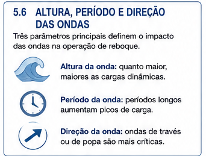
Figura — Altura, período e direção das ondas.
A ilustração reforça a distinção feita por Hensen: a avaliação operacional não deve considerar apenas wave height. Também devem ser avaliados wave period e relative wave direction.
Para a discussão específica de swell, Hensen considera períodos de 8 segundos ou superiores e rebocadores modernos de elevada manobrabilidade, como:
- Voith tugs;
- ASD tugs;
- ATD tugs.
Exemplo apresentado — Port Hedland
Hensen cita, como exemplo de parâmetro operacional para fazer fast, 2,5 m de swell com o navio a 8 knots em Port Hedland.
⚠ Atenção PSCPP
Esse valor pertence ao exemplo específico de Port Hedland.
Não deve ser convertido em limite geral para fazer fast rebocadores.
64. Movimento relativo entre navio e rebocador
Um dos aspectos centrais da operação em swell é que navio e rebocador não respondem às ondas da mesma maneira.
Eles podem apresentar:
- amplitudes de movimento diferentes;
- períodos de movimento diferentes;
- movimentos fora de fase.
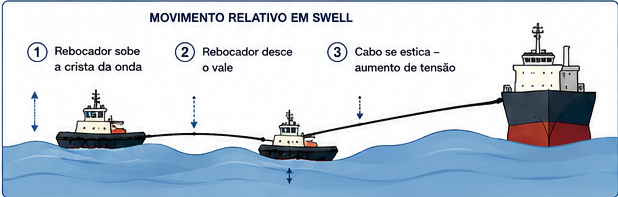
Figura — Movimento relativo em swell.
Quando rebocador e navio respondem de maneira diferente ao mesmo campo de ondas, a distância instantânea entre os dois varia.
Essa variação produz mudanças de tensão na towline, razão pela qual Hensen enfatiza o comprimento da linha e as cargas dinâmicas.
Conceito fundamental
O problema não é apenas a onda isoladamente.
É o movimento relativo rebocador ↔ navio e seu efeito sobre:
- towline;
- posição do rebocador;
- possibilidade de contato;
- segurança da operação.
65. Equipamentos necessários em condições de swell
Hensen identifica requisitos específicos para estabelecer a conexão entre navio e rebocador em swell.
São mencionados:
- long heaving lines, pois o rebocador pode não conseguir aproximar-se muito do navio;
- long light pennants or grommets fabricados com fibras HMPE;
- um messenger suficientemente longo e resistente;
- towlines suficientemente longas para evitar grandes picos de carga provocados pelos movimentos relativos.
Comprimento citado pela publicação
Como exemplo, Hensen menciona towlines da ordem de 80 a 100 m em condições de swell.
🌐 Termos técnicos
- Heaving line — retinida;
- Pennant — pendente/cabo intermediário;
- Grommet — estrope contínuo;
- HMPE — High Modulus Polyethylene;
- Messenger — mensageiro;
- Peak load — pico de carga.
66. Comprimento da Towline e cargas dinâmicas
Hensen destaca que, quando as circunstâncias permitem, o uso de towlines mais longas permite absorver melhor as forças dinâmicas produzidas pelos movimentos relativos.
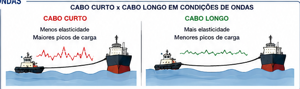
Figura — Towline curta × towline longa em ondas.
A ilustração representa o princípio discutido por Hensen: uma linha mais longa oferece maior capacidade de acomodar os movimentos relativos, reduzindo a severidade dos peak loads.
Quando o rebocador possui towing winch, a linha pode ser:
- paga conforme necessário;
- novamente encurtada quando as condições melhoram;
- encurtada quando o conjunto entra em águas portuárias mais protegidas.
⚠ Atenção PSCPP
Isso não significa que “quanto maior a towline, melhor” em qualquer situação.
Hensen relaciona o comprimento às condições existentes e à necessidade de absorver as cargas dinâmicas produzidas pelo movimento.
67. Riscos destacados pelos Tug Masters em swell
Hensen registra três aspectos enfatizados por Tug Masters experientes quando operam em swell.
1. Surfing
Dependendo da direção relativa entre swell e rebocador, o rebocador pode surfar a face da onda.
Quando existe keel ou skeg capaz de produzir força hidrodinâmica significativa, manter um rumo constante pode tornar-se difícil.
2. Movimentos relativos
Quando o swell incide pelo través do navio e este apresenta rolamento significativo, navio e rebocador podem rolar:
- com amplitudes diferentes;
- com períodos diferentes;
- fora de fase.
Hensen identifica então risco de contato entre o navio e:
- a superestrutura do rebocador;
- seus apêndices submersos.
3. Grandes movimentos de leme
Em swell, o navio assistido pode realizar movimentos frequentes e amplos de leme.
Isso constitui outro risco para rebocadores operando nas proximidades.
⚠ Atenção PSCPP
A avaliação das condições não pode ser feita somente observando a altura das ondas.
O movimento relativo navio ↔ rebocador é parte essencial do risco.
68. Aproximação para passagem da Towline em swell
A maneira adequada de aproximar o rebocador para passar a towline depende da situação específica.
Hensen observa, por exemplo, que uma aproximação pela popa com swell pela alheta pode ser desconfortável e exigir elevada atenção ao governo.
Até mesmo uma aproximação diretamente ao transom necessita atenção, devido ao movimento longitudinal produzido pelo swell.
Posição considerada mais segura
Hensen considera mais seguro, para fazer fast, o uso do:
centre lead forward
e/ou
centre lead aft.
🌐 Termos técnicos
- Quartering swell — swell incidindo pela alheta;
- Transom — espelho de popa;
- Centre lead forward — saída central do cabo a vante;
- Centre lead aft — saída central do cabo a ré.
69. Lee Side e Weather Side
Hensen observa que, dependendo das circunstâncias e da manobra do navio, um harbour tug pode conseguir trabalhar mais efetivamente e em maiores alturas de onda no lee side do navio.
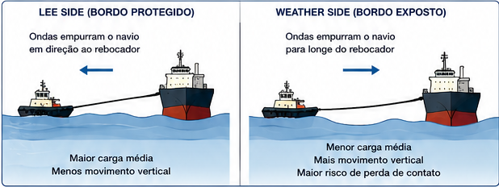
Figura — Lee side × Weather side.
A imagem ilustra a distinção espacial entre o lado mais protegido pelo próprio navio e o lado diretamente exposto às ondas.
Hensen ressalta, contudo, que a possibilidade de utilizar o lado protegido depende das circunstâncias locais e da manobra do navio.
🌐 Termos técnicos
- Lee side — lado protegido;
- Weather side — lado exposto ao tempo e às ondas.
⚠ Atenção PSCPP
Não transforme “operar no lee side” em regra absoluta.
A própria publicação condiciona essa possibilidade à situação local e à manobra sendo executada.
70. Terminal Tugs e Escort Tugs em ondas
Na Section 4.5.2, Hensen amplia a discussão para rebocadores que precisam trabalhar regularmente em condições de ondas.
Isso inclui:
- terminal tugs;
- escort tugs;
- rebocadores utilizados em terminais offshore;
- assistência a FPSOs;
- assistência a FLNGs;
- assistência a SPMs.
O crescimento do tamanho dos navios e suas elevadas velocidades de dead slow também pode exigir que os rebocadores façam fast mais cedo, em locais onde as ondas já são relevantes.
Requisito descrito por Hensen
Essas operações exigem seaworthy tugs capazes de manter desempenho em ondas.
🌐 Termos técnicos
- Terminal tug — rebocador destinado principalmente à assistência de determinado terminal;
- Escort tug — rebocador destinado também a funções de escort;
- Seaworthy tug — rebocador com características adequadas para operação em mar exposto;
- Operability envelope — envelope de condições dentro das quais a operação pode ser realizada.
71. SAFETUG Joint Industry Project
Para estudar como melhorar a operação dos rebocadores em ondas, Hensen apresenta os resultados do SAFETUG Joint Industry Project — JIP.
O projeto foi conduzido pela MARIN, nos Países Baixos, entre 2005 e 2010, em cooperação com representantes da indústria de rebocadores e usuários finais.
O projeto estudou principalmente:
- towing performance em ondas;
- movimentos do rebocador;
- direct towing;
- indirect/escort towing;
- estabilidade dinâmica;
- projeto do casco;
- propulsão;
- towlines;
- winches;
- fenders;
- fatores humanos.
Resultado particularmente importante
Os estudos identificaram o roll motion como um dos movimentos relevantes para os limites de operação em ondas.
72. Sistema propulsivo e operação em ondas
Nos resultados apresentados por Hensen, a capacidade de produzir rapidamente empuxo na direção requerida é particularmente importante em condições de ondas.
A publicação discute a influência dos diferentes sistemas propulsivos sobre a capacidade de controle do rebocador nessas condições.
Relação com a Parte 2
As diferenças entre:
- VSP;
- azimuth tractor;
- reverse-tractor;
- ASD;
não são apenas classificatórias.
A configuração do rebocador e seu sistema propulsivo influenciam o comportamento em ondas e a capacidade de manter a assistência.
73. Towlines e Render-Recovery Winches
O SAFETUG demonstrou que a dinâmica da towline e os movimentos do rebocador são fundamentais para ampliar a capacidade de operação em estados de mar mais elevados.
Hensen destaca a importância de um render-recovery winch capaz de lidar com grandes variações da força na towline sem introduzir oscilações excessivas no sistema.
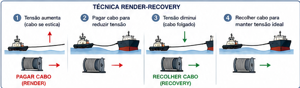
Figura — Princípio de Render-Recovery.
Quando a força no cabo aumenta, o sistema pode render, pagando linha.
Quando a força diminui, pode recover, recuperando a linha.
O objetivo é controlar as variações da força na towline e evitar oscilações excessivas.
Render-Recovery Winch
O sistema permite:
- pagar linha quando a carga aumenta;
- recuperar linha quando a carga diminui;
- controlar as variações da tensão;
- reduzir cargas dinâmicas excessivas.
🌐 Termos técnicos
- Render-recovery winch — guincho capaz de pagar e recuperar cabo em resposta às variações de carga;
- Dynamic winch — guincho dinâmico;
- Towline dynamics — dinâmica do cabo de reboque;
- Line response — resposta da linha às cargas e movimentos.
74. Propeller Wash e perda da força efetiva
Os estudos apresentados por Hensen também analisam perdas produzidas quando o propeller wash do rebocador incide sobre o casco do navio assistido.
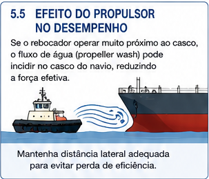
Figura — Propeller wash incidindo no casco.
Parte da energia utilizada pelo rebocador para produzir empuxo pode gerar um escoamento que interage com o casco do navio assistido.
Os ensaios apresentados por Hensen/MARIN mostram que essa interação pode reduzir significativamente a força efetivamente transmitida ao navio.
Hensen apresenta resultados de ensaios com um ASD tug de 80 tons Bollard Pull.
Resultados em calm water
Quando o rebocador puxava na proa ou na popa do navio, a maior perda média mencionada era da ordem de 12%.
Quando o rebocador puxava no costado, aproximadamente a uma distância de um comprimento de rebocador do casco, foram observadas perdas médias da ordem de:
43% a 64%.
Segundo a publicação, a perda:
- diminui quando a towline é significativamente alongada;
- aumenta quando a underkeel clearance diminui;
- pode diminuir quando os thrusters são orientados em determinado ângulo.
⚠ Resultados de ensaio
Os valores de 12% e 43–64% pertencem aos ensaios específicos descritos por Hensen/MARIN.
Não são coeficientes universais para qualquer operação.
75. Perdas em condições de ondas
Nos ensaios apresentados no Chapter 4, as maiores perdas associadas à interação entre o propeller wash do rebocador e o casco do navio foram encontradas em condições de ondas.
Resultado extremo do estudo
Hensen registra perdas que, em determinadas condições ensaiadas, podiam chegar a quase 90% da força.
A pushing force também diminui consideravelmente em ondas, dependendo da direção das ondas.
⚠ Interpretação correta
“Quase 90%” não é um valor padrão de perda em operação.
É o resultado extremo observado nas condições específicas dos estudos apresentados.
Sua importância está em demonstrar que o Bollard Pull nominal pode diferir significativamente da força efetivamente transmitida ao navio.
76. Limites de altura de onda observados no SAFETUG
Hensen apresenta resultados obtidos a partir de questionários respondidos principalmente por Tug Masters de ASD tugs.
Braking / Steering
0–2 knots: aproximadamente 3,1 m.
3–7 knots: aproximadamente 2,7–3,1 m.
7–8 knots: aproximadamente 2,0–2,5 m.
Pulling
0–2 knots: aproximadamente 3,4 m.
3–7 knots: aproximadamente 3,1 m.
Pushing
3–7 knots: aproximadamente 2,8 m.
7–8 knots: aproximadamente 2,3 m.
O próprio Hensen observa que esses valores de questionário são relativamente elevados.
Os estudos do SAFETUG indicaram, dependendo do wave period e da wave direction, limites de aproximadamente 1,5 a 2,0 m para pushing, inferiores aos valores do questionário.
⚠ Cuidado com os números
Esses valores não constituem uma tabela universal de limites operacionais.
Eles representam:
- experiência relatada por Tug Masters;
- ensaios específicos do SAFETUG;
- determinadas configurações de rebocador;
- determinados períodos e direções de onda.
77. Human Factor — limites do Tug Master
O SAFETUG não analisou apenas a capacidade estrutural e propulsiva dos rebocadores.
Também foram estudados os limites do operador humano.
Dois aspectos recebem destaque:
- acelerações transversais experimentadas pelo Tug Master;
- necessidade de treinamento específico para operações em ondas.
Hensen menciona critérios relacionados a:
- Motion Illness Rating — MIR;
- Motion Induced Interrupt — MII.
Conceito fundamental
O limite operacional do rebocador não é necessariamente atingido primeiro pela máquina, pela towline ou pela estabilidade.
O movimento do rebocador pode atingir um nível no qual o próprio operador deixa de conseguir executar adequadamente a tarefa.
A publicação também enfatiza operation-specific training para Tug Masters envolvidos em assistência em ondas.
🌐 Termos técnicos
- Human factor — fator humano;
- Transverse acceleration — aceleração transversal;
- Motion Illness Rating — MIR — critério relacionado aos efeitos do movimento sobre o operador;
- Motion Induced Interrupt — MII — interrupção de tarefa provocada pelo movimento;
- Operation-specific training — treinamento específico para determinado tipo de operação.
78. Síntese — Limites ambientais
- Hensen não estabelece um único limite universal de vento ou corrente para harbour tugs.
- Nevoeiro constitui condição particularmente crítica em áreas portuárias confinadas.
- Em diversos portos, aproximadamente 0,5 NM de visibilidade é encontrado como limite.
- Como indicação para harbour tugs típicos, Hensen apresenta aproximadamente 1,5–1,8 m de altura significativa para conventional tugs e cerca de 2,0 m para tractor/reverse-tractor/ASD.
- Esses valores são indicativos, não limites universais.
- Em swell, altura, direção relativa e período devem ser considerados conjuntamente.
- Towlines mais longas podem ajudar a absorver cargas dinâmicas.
- O Chapter 4 menciona 80–100 m como exemplo em condições de swell.
- Ondas aumentam o risco de girting em conventional tugs trabalhando no cabo.
- Dependendo das circunstâncias, o lee side pode proporcionar condições mais favoráveis.
- Roll motion é importante para os limites de operação em ondas.
- Render-recovery winches são especialmente relevantes em operações dinâmicas com towline.
- Propeller wash contra o casco pode reduzir severamente a força efetiva.
- Período e direção das ondas podem ser tão importantes quanto a altura.
- O projeto do rebocador influencia fortemente o limite ambiental.
- O fator humano faz parte do envelope operacional.
Modelo mental da Parte 5
CONDIÇÃO AMBIENTAL
↓
MOVIMENTOS DO NAVIO E DO REBOCADOR
↓
TOWLINE + PROPULSÃO + CASCO + ESTABILIDADE
↓
EFEITO SOBRE SEGURANÇA E PERFORMANCE
↓
LIMITE OPERACIONAL
⚠ Regra fundamental para o PSCPP
Não memorize apenas uma altura de onda.
Pergunte:
QUAL REBOCADOR?
QUAL OPERAÇÃO?
QUAL VELOCIDADE?
QUAL DIREÇÃO E PERÍODO DAS ONDAS?
QUAL MÉTODO DE ASSISTÊNCIA?
QUAL É O PROJETO E O EQUIPAMENTO DO REBOCADOR?
⚠ Preparação para a Parte 6
Depois de estudar quanto o ambiente pode limitar a capacidade dos rebocadores , o próximo passo será determinar quanto esforço é necessário para controlar o navio.
PARTE 6 — TONELAGEM DE TRAÇÃO ESTÁTICA NECESSÁRIA
REQUIRED BOLLARD PULL
📝 Questões de revisão
Questão 1
[ENUNCIADO]
📋 Progresso das questões
0 de [TOTAL] questões respondidas
📊 Resultado da tentativa
✅ Gabarito comentado
Questão 1 — Alternativa A ✅
[COMENTÁRIO DO GABARITO]
📚 Referências bibliográficas finais
- [REFERÊNCIA 1]
- [REFERÊNCIA 2]
⚓ Conclusão da aula
[SÍNTESE FINAL]